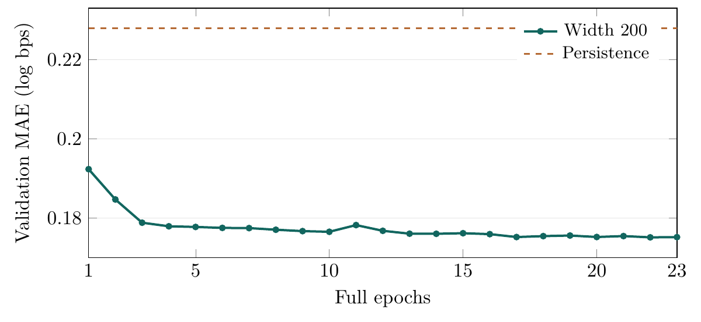
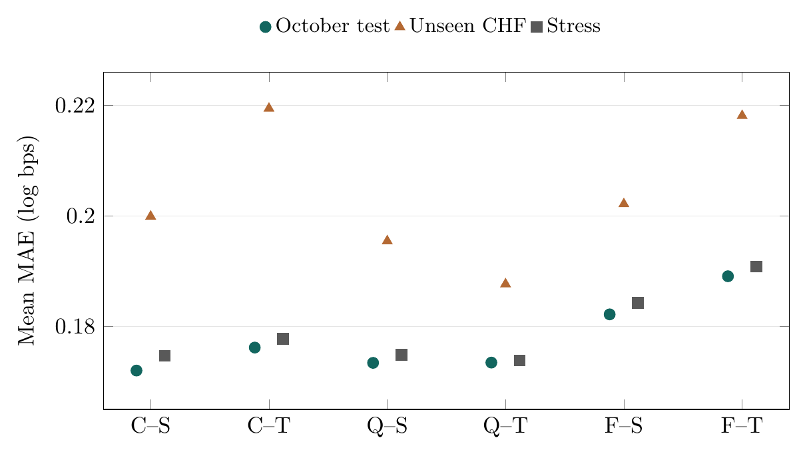

What a loop can tell us
A dealer quotes two prices. At one price the dealer buys the base currency. At the other the dealer sells it. Put three currency pairs on a triangle and a question appears that none of the quotes can answer in isolation. After exchanging once around the triangle, how many units of the starting currency would the displayed prices return? A second question requires a clock. What would those three quotes imply one second later?
PhaseWeave studies the second question using the first as an exact arithmetic baseline. Its pilot takes a history of three pairs and predicts two future log margins, one for each orientation. The units are log basis points. The data are historical quotes. The target is an observable quantity even where the transaction sizes, routing latency and actual fills are unknown.
A reader's first experiment
Visit the market topology lab, choose the recorded September example, pause playback and select 250 ms maximum quote age. Find a timestamp at which the route table shows both values. Raise the cost per leg from 0.1 to 0.5. Each complete triangle should lose exactly 1.2 log basis points because three legs became 0.4 more expensive. A missing route should still be missing. The calculation depends on the number of steps and the units alone.
Now switch between the sphere and torus while holding the timestamp fixed. The cellulation changes. The same recorded market conversions still determine the table. This distinction recurs throughout the book. A topology supplies measurable structural features, a graph model estimates a future observable, and an independently implemented verifier computes the current route.
Three reading paths
For a replay, start with the bid/ask construction and clock rules, work the margin example and follow the reproduction commands. For the mathematics, start with surfaces, compare additive and matrix transport, and calculate the observable of a cyclic qutrit. For the empirical study, read the architecture and then the campaign ledger. The evidence tables distinguish validation selection, chronological holdout, stress sessions and unseen assets.
The numbered chapters develop definitions, counterexamples and worked procedures. The implementation reader at the back ties those procedures to selected functions from the pilot. The companion HTML carries the same content, with local calculators and links to the recorded browser walkthrough. Values obtained by moving a browser control are reference calculations. Checkpoint results are identified by run name and split.
Reconstruct the target from its units
Imagine two forecasters return 0.15 and 0.12. Before comparing them, ask whether the numbers are mean absolute errors, expectations of signed margins, or probabilities of a positive outcome. Absolute errors have units of log basis points and are smaller when the prediction is closer. A signed margin also has units of log basis points, yet its larger value represents a better quoted return on that route. A probability has no units. Confusing these three turns an accurate forecast of a loss into an apparent trading recommendation.
For each table in this book, first identify the row population, direction convention and present or future time. Then name its reference measurement. The same future labels can be scored against a learned residual, current-margin persistence and a direction-selecting policy. These questions turn a collection of model outputs into a falsifiable experiment.
The spectral question
For the Riemann zeta function one starts where the Dirichlet series converges absolutely. Its analytic continuation gives a meromorphic function with a pole at one. The functional equation for the completed function reflects the critical strip across its midline, together with conjugation when appropriate. This symmetry permits zeros on the midline and also symmetric pairs away from it. Symmetry alone cannot choose between them.
A Dirichlet character supplies periodic multiplicative weights. Replace each coefficient one by the character evaluated at n. The generalized Riemann hypothesis for this family places the nontrivial zeros of each resulting L-function on the critical line. The scope of a theorem must identify the character family and which zeros it concerns. A pole at one for a principal character is consistent with a zero-free region.
A conditional spectral argument
Suppose an operator H on a Hilbert space is self-adjoint with a specified domain, and suppose a proved identity places every nontrivial zero at one half plus i times a spectral value of H. Then the reality of the spectrum gives the desired real part. Each supposition carries mathematical work. A symmetric formula on a dense core can have several self-adjoint extensions. A finite matrix constructed from a list of known ordinates can reproduce those ordinates exactly while saying nothing about missing zeros.
One route would identify a regularized spectral determinant or a trace distribution on a sufficiently rich class of test functions. Normalization, multiplicities, poles, and convergence enter the identity. A match of a few low-order moments leaves many spectral measures possible. Even exact agreement of selected finite traces needs a completeness argument to imply equality of the infinite objects.
Where PhaseWeave enters
The historical Hilbert–Pólya project supplies cyclic clocks, formal shifts and explicit finite observables. The implementation uses a trainable finite-dimensional feature inspired by these objects. Its proof obligations concern invariance, signs and numerical agreement. Its data can answer questions about the predictive consequences of that particular feature on market windows. Those observations add no evidence to the location of L-function zeros.
Surface orders and Hilbert–Pólya source editions
A finite obstruction to an inverse inference
Take the Hermitian matrices diag(−2,0,2) and diag(−1,−1,2). Each has zero trace, and all eigenvalues are real. Their characteristic polynomials differ: the first has a root at zero and the second has a repeated root at −1. Matching the trace and self-adjointness therefore leaves both multiplicities and spectral locations undetermined. Adding finitely many further conditions may distinguish these examples; one must specify which constraints identify the object under the hypotheses used.
For PhaseWeave an analogous test asks which distinct inputs the proposed measurement maps to the same output. The real part of the qutrit clock, for example, assigns the same expectation to pure levels 1 and 2. A downstream learner cannot reconstruct their distinction from this expectation alone.
Reading the 2026 theorem reports
The September 30 quasi-RH manuscript reports a zero-free region to the right of real part seven eighths for Dirichlet L-functions and finite-order Hecke L-functions over the indicated imaginary quadratic field. The principal pole is excepted. Its October 5 companion reaches eleven twelfths by a different argument. The half-plane to the right of seven eighths contains more points, so its exclusion of zeros is stronger.
For example, a point with real part 0.9 falls inside the stronger exclusion. A hypothetical nontrivial zero with real part 0.7 satisfies neither exclusion condition and would violate the critical-line assertion. This is a logical example, independent of the existence of any such zero. Strict inequalities also matter at the boundary.
A forcing term changes the problem
The three-dimensional incompressible Navier–Stokes equations balance transport, pressure, viscosity and an external force. Positive viscosity smooths gradients in the linear heat equation. Nonlinear advection carries velocity into new scales. The September 8 report constructs finite-time singular behavior from rest under smooth forcing, while kinetic energy stays finite. Removing the force gives a different existence question. The report separately discusses unforced Euler dynamics, whose viscosity is zero.
The integral of squared speed and the pointwise maximum measure different things. In three dimensions a speed of order one over a length scale on a ball of that radius gives a squared-speed integral of order the radius. This scaling exercise explains how increasing speed can coexist with bounded energy. It supplies no solution of the PDE or smoothness proof for the force.
OpenAI, September 8 report and proof artifacts
Existence and a spectral gap
For a compact gauge group put a group element on each oriented lattice edge, with the inverse on the reverse edge. Under local changes of frames, the product around a closed loop changes by conjugation at its base point. Taking a trace yields a frame-independent observable. Wilson lattice measures on finer lattices enter a continuum scaling-limit problem.
The November 10 assessment of the October 28 submission credits construction of a four-dimensional Wightman theory as a scaling limit for compact simple gauge groups. The assessment leaves uniqueness of the infinite-volume limit and positivity of the mass gap open for that submission. A gap additionally requires separation of the vacuum energy from the positive spectrum. A finite-lattice energy separation may shrink with volume or lattice spacing.
Yang–Mills assessment and dated verification records
The market analogue of changing a frame is changing the unit at each asset. Tracking the assumptions on forcing, volume and limiting operations in these reports suggests an equally precise habit for markets. Specify observation time, cost convention and data support every time an inferred margin is interpreted.
Darts, rotations and faces
A graph drawn on a surface carries a cyclic order of the half-edges around each vertex. Encode the half-edges as a set H of darts. The involution alpha exchanges the two darts of every edge. The permutation sigma advances around each vertex. Together they determine an oriented ribbon graph. To obtain a connected closed cellular surface, require a transitive action on darts and cap each boundary orbit by a disk.
Composition acts on the rightmost argument first. The atoms are darts, so counting an edge twice changes the Euler characteristic. In a clean dessin a white midpoint has degree two. Contracting that midpoint leaves the paired darts and black vertex rotations used here. Reintroducing the midpoint adds one vertex and one edge per physical edge and preserves the Euler characteristic.
A triangle calculated by hand
Name the darts 01, 10, 12, 21, 20, 02 by their endpoints. Alpha swaps each with its reverse. Sigma has the three cycles (01 02), (10 12), (21 20). Start at 01, apply the inverse rotation to get 02 and reverse to get 20. The next two applications give 12 and 01. The other face orbit is (10 21 02). There are three vertices, three edges and two faces. The resulting closed surface has genus zero.
A single cellular triangle cannot be placed on the torus with the same dart data and two disk faces. The published lab adds an auxiliary non-market meridian to make a torus cellulation. Its market longitude can wind around a handle. The extra edge belongs to the surface description and carries no exchange quote. An algorithm that traverses it as a trade has mixed edge types.
A reliable implementation test
Check that alpha has no fixed points and squares to the identity, verify each rotation is a permutation, and traverse the joint orbits. Record a face orientation convention once. The forward face convention sigma alpha is the inverse of the convention above. Swapping the convention changes signed incidence. A contractible loop and a handle loop can agree in length and have different topological classes.
A torus with four darts
One vertex and two oriented loops supply a four-dart fixture. Set alpha=(1 3)(2 4) and sigma=(1 2 3 4). Applying alpha after the inverse rotation produces the single face orbit (1 2 3 4). Thus V=1, E=2 and F=1, giving genus one. This is the familiar square identification: the boundary word goes around each loop once in each direction.
For an antisymmetric real field the signed edge counts of that single face vanish. Nevertheless either loop can have nonzero period. Assign values 2 and −1 to the two forward generators. The face curl is zero, whereas the periods on those generators are 2 and −1. A model restricted to face curls would see the same zero as on the all-zero field. Handle measurements recover information that any contractible boundary sum misses in this example.
Surface orders and their finite images
Consider paired darts [h] as quiver vertices. For each h attach an arrow from its pair to the pair at the inverse rotation of h. Two choices of continuation meet at the tip in the local construction. The continuation given by the inverse rotation follows the permitted cycle. The alternative following the face permutation gives the prohibited length-two path, expressed here in travel order.
This local relation removes certain words in the path algebra. Completion adds infinite series in the specified adic topology. For the formal gluing presentation, hereditary branches share a common discrete valuation ring. Equality of appropriate paired diagonal constants imposes the gluing constraint. The completed order has rank over the common ring given by the sum of squared permitted-cycle lengths in the cited construction.
Why the coefficient ring matters
A formal uniformizer has positive valuation. Multiplying by it changes the valuation of the last coordinate when a companion shift wraps around. After q shifts every entry has crossed that wrap once. The resulting q-th power is the uniformizer times identity. A quantum gate acting on a finite Hilbert space must preserve norm. A complex phase at the wrap gives a different specialization with unit modulus.
Knowing finitely many traces, face curls or phase expectations can distinguish selected examples. Faithfulness would require proving that distinct algebra elements are separated under the representation in the stated category. Zeroing a forbidden path only tests one direction of one relation. Conversely, two distinct loop gains differing by a full phase period can map to the same clock feature. The market study evaluates a deliberately finite observation map.
A way to use the source
For one dart write down its pair, predecessor in vertex order, face successor, and the source and target of both next arrows. Verify composability before applying the relation. Repeat with the inverse face convention and compare the resulting labels. When transporting a construction between editions, matching matrix sizes gives less information than matching the arrow, orientation and wrap rules.
Boundary operators and transport
Choose an orientation for every undirected edge. Write one negative entry at its tail and one positive entry at its head in the vertex-by-edge matrix B1. The edge-by-face matrix B2 counts each oriented boundary with signs. Multiplying the matrices adds the starts and ends around the boundary. Every step leaves a vertex that another step enters.
A closed edge chain z lies in the kernel of B1. Its pairing with a real edge cochain x is the sum of field values along its orientation. Changing x by the transpose of B1 applied to a vertex potential h leaves this pairing unchanged. Face sums are given by the transpose of B2 applied to x. The conclusion uses exact linear relations and permits arbitrary finite real potentials.
If two representatives differ by B2 times a face chain, their paired periods differ by the face chain paired with the curl. Independence of representative follows for closed cochains. For a cochain with nonzero face curl, specify which representative furnished a measured handle observable. Storing only a homology class then loses a numerical choice.
From positive rates to matrices
Scalar positive rates compose by multiplication. With linear transports between coordinate spaces, factors compose in travel order with the last matrix on the left for column vectors. Local basis changes telescope internally and leave conjugation at the base of a closed path. Cyclicity of trace gives conjugation invariance. For matrix-valued factors, an arbitrary permutation of the steps can change the product even if the multiset of edges is preserved.
The FX verifier observes separate directions. For a bid b and ask a the forward and reverse logs sum to log(b/a). An antisymmetric cochain describes a mid-price field after choosing its direction rule. It cannot represent the loss in an immediate bid/ask round trip by orientation reversal alone. Retain the spread as its own feature or retain the two directed edges explicitly.
Incidence on three oriented edges
Use the cyclic orientation A→B, B→C, C→A. At A the boundary operator picks minus the first edge plus the third; at B it picks the first minus the second; at C it picks the second minus the third. Acting on (1,1,1) gives the zero vector. For the sphere embedding the two faces have signed edge columns (1,1,1) and (−1,−1,−1). Both lie in the kernel of the vertex boundary, and together span that one-dimensional kernel. First homology therefore vanishes over the reals for this cellulation.
A cochain (1,0,0) has curls +1 and −1 on the two faces. Their sum vanishes because the total oriented surface has no boundary. One individual face can still carry a nonzero signal on a genus-zero surface. Confusing the dimension of first homology with the number of measurable contractible face curls would discard that signal.
A gauge on a quote graph
A unit change at a currency vertex changes the numerical size of each adjacent rate. Suppose values measured in the new units are the old numerical values multiplied by positive factors s(v). Then conversion from u to v acquires the factor s(v)/s(u). In log coordinates this is a difference of vertex potentials, with h(v) equal to the log of s(v). This derivation uses dimensions and can be checked without a stochastic model.
For example, measuring JPY in blocks of one hundred divides the numerical rate into JPY by one hundred and multiplies the rate out by one hundred. The same factors cancel around a closed path. A cost charged as a fixed fraction of the leg output is dimensionless. A fee quoted in a separate asset needs its own conversion convention before subtracting a fixed log cost.
Fixing a tree gauge
Take 0→1 and 1→2 as reference edges. Set h(0) to zero, h(1) to the negative of the first log bid, and h(2) to h(1) minus the second log bid. The transformed forward tree bids become zero. The direct edge 0→2 becomes its original log bid less both tree bids. A common additive constant in h changes none of these edge values.
The reverse edge 2→0, after transformation, equals the sum of the two tree log bids less the direct log ask. This is the forward cycle's gross log margin. In the opposite direction, sum the transformed 0→2, 2→1 and 1→0 values. Gauge fixing here compresses the information needed to compare routes while retaining reverse spreads. If either tree quote fails the age rule the frame loses the chosen reference and the transformed features are masked.
Why keep the continuous value
Wrapping a real gain in a complex phase gives a compact representation that can capture periodic features. Gains separated by an encoding period have identical phases. A network that sees only this phase cannot recover the sign and magnitude in general. The trained model retains the current continuous margins and adds a learned residual. The economics analogy motivates a transformation law and a testable set of observables.
Ilinski, gauge theory of arbitrage
A numerical gauge with spreads
Start with forward tree logs 3 and 5 and a direct 0→2 log of 7, all in a common scale. Choose the potentials (0,−3,−8). Then the direct transformed value is −1 and the two forward tree values are zero. Give the reverse tree edges values −3.2 and −5.4 and they transform to −0.2 and −0.4, exactly the two local round-trip losses.
The opposite route 0→2→1→0 has transformed sum −1.6 and original sum 7−5.4−3.2=−1.6. The individual numbers have become much smaller, which makes scale handling easier at the model boundary. A clipped feature can still lose information even when the original gauge transformation was invertible after recording the tree rates. The exact verifier uses the original continuous route arithmetic.
Two prices for every pair
Let a pair A/B quote B units per A. Selling A at the bid buys B, while selling B at the ask buys A at the reciprocal ask. In a three-pair frame there are six such edges. Every simple closed triangle has three choices of starting vertex for the same ordered loop. Requiring its smallest vertex to come first removes rotations and leaves two distinct orientations.
Here c is the extra per-leg cost already expressed in log basis points. Under a proportional ordinary fee f deducted from the output the corresponding log cost is minus ten thousand times log(1−f). An individual spread is already inside each bid or reciprocal ask. Deducting a second generic spread on each leg changes the label.
A triangle small enough to audit
Use illustrative quotes A/B = 2.0000 / 2.0002, B/C = 3.0000 / 3.0003, A/C = 6.0012 / 6.0018. Forward travel A→B→C→A returns 6/6.0018 units per A. Reverse travel A→C→B→A returns 6.0012/(3.0003 × 2.0002). After 0.1 log bps per leg the margins are approximately −3.29955 and −0.30010 log bps respectively. The reverse gross rate lies just below one because multiplying the two asks introduces a small cross-term.
Raise the direct bid while keeping it no larger than the direct ask and the reverse margin rises. Changing the direct ask alone affects the forward margin. The two observed directions are never interchangeable. Summing their gross logs gives the three log bid-to-ask ratios. With valid non-crossed quotes that sum cannot be positive, even if one individual route is positive.
Current margin and forecast
The exact contemporaneous margin depends on the recorded edges and fee assumption. A one-second prediction conditions on observed history and estimates the next eligible set of edges. Pair identities and timestamps are part of the evidence. An incomplete graph can still convey information to a model through a mask, while its corresponding complete route has no current margin under the verifier.
Executable-price study of triangular arbitrage
Deriving the no-double-positive property
Multiply the gross forward and reverse triangle products. Each quote pair occurs exactly twice, once at its bid and once at its reciprocal ask. The combined product is the product of the three bid/ask ratios. Each factor is at most one when the book is internally ordered, hence the combined product is at most one. Extra nonnegative per-leg costs shrink the combined product further.
The implication is a useful unit test. If both directions show positive net margins at one synchronized frame, inspect side conventions, signs, fees and crossed quotes. One positive and one negative is compatible with internally ordered books, because the inequality constrains their combined product. Asynchronous venue updates can make a displayed triangle transiently positive even if sequential execution could never realize the apparent margin.
Cost and quote age
Use the illustrative A/B, B/C and A/C quotes from this chapter. The oldest pair is 280 ms old.
The observation clock
An archive timestamp specifies when a source says an event occurred. The timestamp at which a receiver could use that event can be later. In a historical reconstruction without receipt times, define information availability in event time and label the assumption. For decision tick t, the as-of operation uses the last source time less than or equal to t. The age is t minus that time. A future timestamp in the input invalidates the graph.
Two quotes with the same timestamp can carry different prices. In the FX audit the minimum bid and maximum ask are used at tied times. This gives a conservative top-of-book envelope over tied records. Those extrema can come from different rows. The result is an observation policy and need not equal a simultaneous historical quote.
A clock example
Suppose the three last source times are 80, 190 and 280 milliseconds before the anchor. At 250 ms the third pair is stale. Both cycle orientations need it and become unavailable. Widening the maximum age to 1,000 ms restores a numerical route at the expense of looser temporal alignment. A missing value and a zero margin lead to different denominators and different policy conclusions.
At t+1 second, require all three pairs to have refreshed strictly after t and to satisfy the age limit at the new tick. Without independent refresh, persistence would sometimes match a target built from its own exact inputs. The current eligibility rule demands fresh, available quotes at the anchor and future tick. Earlier frames in the lookback may carry masks. This selection conditions on future observation availability, which a live forecaster could not know in advance.
What the archive shows
The initial nine ZIPs span EURUSD, USDJPY and EURJPY in August, September and October 2026. They contain 22,819,287 rows and 6,532 adjacent source-order reversals. The largest documented fall below the running timestamp maximum was 1,000 ms. All source volume fields were zero. The source months use fixed UTC−05:00, including summer dates. Applying a regional daylight-saving rule would shift event alignment.
A target built from the wrong second
Suppose the pair A/B stops updating at t−50 ms while the other two pairs update at t+900 ms. At the decision tick A/B is usable. A join that blindly takes the last value at t+1 second would reuse a 1,050 ms old A/B quote in the target. With a 250 ms limit this row is rejected even before checking the independent-refresh condition.
If the future horizon were shortened below the maximum age, freshness alone would no longer imply a refresh. The explicit greater-than-anchor test then prevents stale-but-within-tolerance values from being counted as independently observed targets. Recording both checks makes the definition robust when cadence, horizon or staleness thresholds change in a follow-on experiment.
Making and splitting a sample
The frozen pilot uses ten pairs across 30 archives and 71,997,600 raw rows. The supervised object has shape 16 × 6 × 3. Its axes are one-second history, fixed directed edge order, and channels for gauge-centered log bps, fraction of maximum age and availability. Training has two scalar outputs per row. The target orientations travel 0→1→2→0 and 0→2→1→0.
Each decision anchor must fit the full lookback and target inside its own UTC period. Within a triangle, the curation code draws up to 16,384 eligible anchors without replacement using NumPy's seeded generator and sorts the resulting indices. The sampling seed is 20261120. Rows are concatenated by triangle. Slicing the first several thousand validation rows therefore changes the represented families.
| Partition | UTC start | Exclusive end | Rows |
|---|---|---|---|
| Train | Aug 1 | Sep 1 | 65,536 |
| Validation | Sep 1 | Sep 17 | 65,536 |
| Stress | Sep 17 | Oct 1 | 65,536 |
| Test | Oct 1 | Nov 1 | 65,536 |
| CHF holdout | Oct 1 | Nov 1 | 32,768 |
Family membership
The four development families are EUR–USD–JPY, EUR–GBP–JPY, EUR–GBP–USD and GBP–USD–JPY. The CHF holdout comprises EUR–CHF–JPY and GBP–CHF–JPY. Some pairs, such as EURJPY, appear across families. An unseen currency is a valuable intervention, while complete market-edge independence and generalization beyond triangles require different splits.
Consecutive windows share most of their history. A random row split would place near-identical evidence on both sides and could collapse uncertainty. The release uses time-separated windows and a paired bootstrap over UTC days for evaluation. Within-day serial dependence remains inside each sampled day. Multi-day dislocations and shifts between months still limit generalization.
A diagnostic before modeling
The single-triangle, full eligible scan at 250 ms produced 148,646 August samples, 247,696 September samples and 241,314 October samples. Positive counts were 2, 18,878 and 4, with 17,511 September positives on just two days. The corresponding persistence MAE values were 0.1992, 0.2192 and 0.1999 log bps. These counts have a different denominator from the stratified frozen model splits. The October test sample can contain zero positives even when a larger source scan finds a few.
A boundary exercise
Consider a lookback of sixteen integer seconds with anchor t and target at t+1. The oldest frame lies at t−15. To keep a sample strictly inside a validation period, both t−15 and t+1 must be in that period, and no earlier training state may enter the feature history. The implemented boundary check is slightly conservative at both ends. Write down the first and last possible anchors before any quote-availability filters, then compare them with the first and last eligible anchors after filtering.
Purging and sampling address different concerns. Purging avoids overlap of observation support across periods. Sampling caps the contribution of highly liquid triangle families and limits training size. Neither operation makes nearby sampled windows independent. Session-block inference addresses a third question about uncertainty under dependent observations.
From depth to an input cap
Gate supplied three one-hour historical spot depth logs for ETH/BTC, BTC/USDT and ETH/USDT on October 30, 2026 at 12:00 UTC. The three files total 1,940,033 rows. Each begins with a full snapshot in the expected seven-field format. The archive checks establish source availability. A reconstructed book additionally needs level-update semantics, coherent sequence ordering, deletion handling and cross-book timestamp alignment.
At the top of a book, a bid of b with base size q accepts at most q base units at b. An ask of a with base size q accepts at most a times q counter units at its reciprocal rate. For a route whose leg i accepts input cᵢ, convert each capacity back to units of the initial asset through the preceding rates. The smallest cap is limiting under the assumed static book.
For a fictional route with rates 2, 3 and 1/6, capacities of 10 units of A, 12 units of B and 30 units of C correspond to initial caps 10, 6 and 5 in A. Five units of A make it through the displayed levels simultaneously. Changing an intermediate quantity changes the cap even when every price stays fixed. Including volume-dependent fees or walking deeper levels requires accumulating piecewise outputs per leg before moving to the next book.
A read-only workstation
The workbench requests public market data, runs an exact route audit and lets a local language model explain structured evidence. A failed provider request or future-dated price creates a missing leg. The recorded FX walkthrough works locally. The Gate browser stream and reference feeds require network access and can yield different observations on each visit.
The local tools distinguish a timestamped conversion from a typed economic observation. Treasury yields quote a percentage per year, equity indexes quote index levels, and crude oil observations have physical units and dated releases. Putting a Treasury rate or an index point into a product of spot FX rates gives a dimensionally meaningless result. A historical reference feature also needs publication time and a vintage policy to support an as-of replay.
A failed-leg thought experiment
Begin with 5 A and convert it into 10 B on the first leg of the illustrative route. Suppose the second book now offers only 6 B of input capacity at the displayed rate. Filling those 6 B returns 18 C and leaves 4 B. The portfolio before the final leg now contains two asset types. A single scalar triangle product has no place to record that residual B exposure.
A sequential replay can track holdings and impose a liquidation rule or a partial-fill policy. Its result depends on future book updates and the assumed action timing. The static cap formula instead asks how much could fit simultaneously through the displayed levels. It is dimensionally valid for its assumption and insufficient for this changed sequence of books.
A clock, a shift and a measurement
Choose an integer dimension q and a primitive q-th root of unity omega. A cyclic qudit state has q complex amplitudes with squared magnitudes summing to one. The clock multiplies basis state j by omega to the power j. In the ToricGT convention the shift decrements j modulo q. A direct basis calculation locates the commutation phase, including its sign.
Indeed SC on e(j) gives omega to the j times e(j−1). CS gives omega to the j−1 times that same vector. At unit twist both powers q are the identity. Using the increment shift reverses the commutation factor. For a general clock exponent p the spectrum is primitive when p and q are coprime.
A qutrit interference calculation
Prepare equal amplitudes on levels 0, 1 and 2. Apply a phase angle theta only to level 1. Direct level measurement still returns thirds. After the inverse Fourier transform the amplitude on level zero is (2 + exp(i theta))/3, so its probability changes from one to one ninth as theta moves from zero to pi. This is an observable effect of a relative phase. Multiplying all three amplitudes by the same phase leaves every outcome unchanged in any subsequent fixed measurement basis.
For a unitary Weyl operator U its expectation may be complex. The real and imaginary parts equal expectations of the Hermitian operators (U+U†)/2 and (U−U†)/(2i). In the qutrit clock basis the real component of C weights level probabilities by 1, −1/2, −1/2. This projection distinguishes mass on level zero but discards the difference between the other two levels. A second observable can recover that difference.
Numerical evidence
The reference probe simulated 16 qubits, eight qutrits and six ququints in batches of four, eight and eight with four layers each. The maximum GPU norm error was 6.20 × 10⁻⁶. CPU and CUDA differed by at most 1.06 × 10⁻⁶ on the mean observable and 2.90 × 10⁻⁶ on the tested derivative. The largest automatic-versus-centered-derivative difference was 1.23 × 10⁻⁵. This is a backend fidelity check for these probes on a classical simulator.
Cirq generalized qids and gates
Measure a relative phase
Direct level measurements before Fourier mixing each have probability ⅓. The phase changes the interference term in the displayed probability.
The trained four-qutrit patch
The ablation model takes six gauge-fixed, clipped and scaled edge values per frame. A learned linear map sends the six entries to four reals. A hyperbolic tangent followed by multiplication by pi gives four bounded angles. Each assigned angle controls a one-wire phase proportional to the real component of the qutrit clock at the current level.
For levels j₁ through j₄, sum the four local phases. For each of the three neighbor pairs add a coupling times 2π/3 times the product of the two level indices. Exponentiate this real phase and divide by nine. The 81 equal-amplitude entries define a normalized complex state. Apply a four-axis inverse discrete Fourier transform with orthonormal scaling. On each wire sum the resulting joint probabilities over the other three wires. Pair the marginal with the real clock to get a feature.
The four measured values are linearly projected into the graph width and added after spatial pooling. A classical temporal transformer and its two-output head receive the result. The circuit is a deterministic differentiable function evaluated by an exact statevector calculation to floating-point precision. The training objective is applied to classical numeric predictions. No shots or quantum processor enter this measurement.
Two controls in the same experiment
The frozen variant freezes the six-to-four angle map and the three coupling parameters, while leaving the output projection and forecasting network trainable. The classical variant uses the same angle map, couplings and projection dimensions. It forms products of adjacent angles, weights them by the couplings and applies cosine to local angles plus neighboring products. This construction controls parameter count and some periodic interactions while changing the feature function.
A trainable-versus-frozen comparison changes optimization freedom. A trainable-versus-classical comparison changes the nonlinear function. Neither alone isolates the causal contribution of entanglement. A follow-up can constrain couplings to zero, scramble phases or substitute a richer classical basis under a fixed search budget. The separate large-state probe assesses numerical behavior of a different circuit from this trained patch.
Memory arithmetic
Four qutrits require 81 complex amplitudes per example before batch and gradient storage. Eight qutrits require 6,561, and sixteen qubits require 65,536. For complex64, raw state bytes per example are eight times the amplitude count. Peak training memory also includes temporary FFT buffers, activations, gradients and optimizer state. A larger measurement has no automatic relationship to better forecast error.
From an incidence tensor to tokens
A graph learner must encode both endpoint identity and edge direction. A node-feature matrix and an edge-feature matrix can be paired with an incidence tensor that records which ordered nodes a particular edge connects. Contraction with masks pools incoming and outgoing attributes. Permuting storage rows should commute with this operation when endpoints and masks are permuted consistently.
The pilot instead gives three node tokens and six directed edge tokens to the pinned ToricGT tokenizer. The edge order is 01, 10, 12, 21, 02, 20. For each node the features are a mean transformed outgoing log rate and the fraction of its two potential outgoing edges present. A zero denominator is clamped to one, with zero-valued missing rates. The two channels distinguish an observed zero from a missing neighborhood.
Edge features comprise the transformed rate clipped to ±20 log bps and multiplied by 0.2, the fractional age and the availability flag. The edge mask suppresses missing tokens. The model includes token and endpoint identity conventions from a fixed triangle. A new ordering of the vertices changes the meaning of targets unless the direction labels are transported as well.
The two axes of attention
Within each recorded second, two blocks mix valid node and edge tokens. Their masked mean yields a frame vector. Stack sixteen such vectors in chronological order and add learned temporal position embeddings. Two temporal blocks process this sequence and the last position is decoded. All sixteen frames are available at the decision time. Full temporal mixing within this permitted history has different causality requirements from producing predictions for all earlier positions in a single pass.
The output layer starts at zero, so at initialization every prediction equals current-margin persistence. Training adjusts a correction to the baseline. The loss is smooth L1 with threshold 0.25 log bps. Inside that radius it is quadratic and outside it grows linearly. Selection uses validation MAE, so a decreasing batch loss alone does not establish an improvement under the selection metric.
TokenGT and the hypotheses of its expressivity result
A sanity check for residual training
Take observed future margins (−0.6, −1.0) and current margins (−0.5, −1.2). Persistence has directional errors +0.1 and −0.2 and mean absolute error 0.15. A learned correction of (−0.05,+0.08) yields predictions (−0.55,−1.12) and mean absolute error 0.085. Both predicted margins stay negative. Improvement in regression error is visible even though the route-selection action remains abstention.
A training objective on the residual could equivalently compare the predicted correction to future minus current margins, provided the same loss and numerical representation are used. The implementation adds the residual before computing smooth L1. This choice makes a zero-initialized readout directly evaluable as the persistence baseline and simplifies model-versus-baseline checks at step zero.
Message passing and graph convolution
A directed message-passing model computes a message from a sender state, a receiver state and an edge description. Aggregate over permitted incoming edges with an order-independent operation, then update the receiver. A shared map ensures equivariance under jointly relabeling nodes and edges, provided identity features are transported with them.
A GCN offers a simpler baseline. A normalized adjacency operator plus self-loops propagates neighboring features before a shared linear map and nonlinearity. For a directed market, specify whether normalization uses incoming degrees, outgoing degrees or a symmetric surrogate. If edges are symmetrized, bid and inverse-ask attributes still require a direction-aware convention to remain interpretable.
A GAT computes an attention score for each allowed neighbor and normalizes across that receiver's neighborhood. With one legal input neighbor the normalized weight is one regardless of its raw score. A GAT can still use the edge value in the message if the implementation supplies it. Consequently a learned attention coefficient alone does not certify importance or a causal effect.
Typed context and transfer
The transferable idea from LigandMPNN is conditioning an ordinary local update on an independently typed context. Here a quote node can receive separate summaries of its neighboring assets, source reliability and cycle membership. Swapping a venue marker with an asset should fail a type check. The market application needs numerical edge features and ordered output witnesses, with evaluation on historical market labels.
A hybrid could execute one GCN, GAT or typed MPNN pass and present its augmented node and edge tokens to a global transformer. Compare it against the independent local network and the pure transformer with matched width, parameters, update count and candidate set. On triangles a single message-passing round has short reach. Improvement on this fixed topology gives weak evidence about deep multihop generalization.
In the published browser, GCN, GAT, MPNN and their TokenGT hybrids are deterministic reference operators that let readers inspect intermediate transformations. The completed training receipts reported here concern the explicit graph-token forecasters and their phase variants. Browser outputs for these alternative operators have no corresponding measured held-out MAE in the pilot.
Function-valued outputs and discrete proposals
A margin head returns two numbers at one decision time. A field head would predict a function over query times and edge locations. An InfGCN-inspired approach expands the field in a finite basis, updates coefficients using local graph context and evaluates the reconstructed function at a requested point. The basis and domain specify the approximation that is being learned.
For example, use piecewise-linear temporal hats on fixed knots. At a query midway between two adjacent knots only their two hat coefficients contribute. Hold out whole query times when fitting a field and compare reconstruction with linear interpolation and persistence. A transformed coefficient may appear accurate on its training grid while oscillating between samples. Gaps, a jump at a market open and stale intervals all complicate a smoothness assumption.
The original InfGCN operates on continuous fields with geometric symmetries in three dimensions. The transplanted design would need its own symmetry contract for asset relabeling and time shifts. The original equivariance guarantee and empirical accuracy concern its own representation and data.
InfGCN, original neural operator
ADFLIP as a source of a sampling idea
A second proposed head takes a partial route or masked edge state and samples a legal discrete edit conditioned on the observed graph. Discrete conditional flow matching motivates a trajectory from simple starting states toward a distribution over completed candidates. Here the finite action set might consist of appending a legal edge, closing a route or abstaining. Only this abstract computational principle transfers into PhaseWeave.
For small graphs enumerate legal terminal actions exactly. Feed the same conditioning features to an ordinary categorical classifier. Fix the number of sampled candidates, evaluate route validity and coverage, and report compute per verified proposal. A generator can improve diversity while reducing the accuracy of its most likely candidate. Forecasting and proposing therefore need distinct scoring rules.
Neither the function-field head nor this generator appears in the completed 24+2 or 12-run studies. Their comparison objects, query support and legal-action masks must be defined before a future result could be attributed to the new mechanism.
ConvexTok and a shortest path
A canonical byte serialization can encode typed graph records. Require fixed field order, deterministic numeric formatting and explicit separators or lengths so decoding is unambiguous. Semantic relabeling may still change serialized bytes. Correct round-trip behavior and invariance to graph relabeling are separate properties.
For a byte string of length n create vertices 0 through n. A recognized token covering bytes from i up to j creates a forward edge i→j with a cost. Every individual byte has a fallback edge. Tokenization becomes a shortest path from zero to n in a directed acyclic graph. Dynamic programming is exact for fixed prices and allowed edges.
A certificate by hand
Encode ABC with single bytes costing 1 each, AB costing 1.4, BC costing 1.2 and ABC costing 2.7. The optimal costs at the four boundaries are 0, 1, 1.4 and 2.2. The optimal path is A followed by BC. Greedily taking the longest token costs 2.7. A proposed path AB followed by C costs 2.4 and its regret against the frozen optimum is 0.2.
Retain the predecessor pointer at each boundary. A verifier can concatenate the selected byte slices and recover the input, then recompute all dynamic-programming costs. Changing prices, vocabulary or normalization changes the graph and the certificate must be recomputed. Ties need a deterministic choice if downstream retrieval refers to token boundaries.
The inherited ToricGT implementation includes candidate collection, vocabulary optimization and a DAG exporter. The experiment proposed for finance would fit prices and vocabulary from training graphs only, freeze both, and carry semantic spans into decoded graph evidence. A pretrained language model's tokenizer has separate constraints. Report its native token budget when serialized graphs are fed to it.
Tropical aggregation in the actual kernel
In the max-plus semiring, addition selects the maximum and multiplication adds ordinary real numbers. Negative infinity supplies the additive zero, and ordinary zero supplies the multiplicative identity. Taking the best path with an additive score is a natural use of this algebra. The implementation must still specify which stages of an attention calculation use ordinary arithmetic.
In the training kernel, the score matrix is a scaled ordinary dot product of queries and keys. For the width-scaled variant, subtract the largest coordinate of each query and key, L2-normalize each vector and use a fixed multiplier. The tropical variant then aggregates each value channel by maximizing score plus value. The softmax alternative takes a weighted average over values.
Suppose one query gives scores 1 and 0, with scalar values 0 and 2. Tropical aggregation returns 2. Softmax returns 2/(e+1), approximately 0.538. Mask the second key and the tropical result becomes 1 while the softmax output becomes zero. Their response to adding a common score offset differs too. Softmax weights are unchanged, while the tropical result shifts by that offset.
An empty query row needs an explicit zero output. Filling masked scores with a finite sentinel and reducing over an empty effective set can leave a large meaningless value. Blockwise maxima can reproduce a global max by taking maxima over local blocks and combining them. The source also provides a blockwise ring-style kernel. The trained ablation compares the named softmax and tropical settings.
Interpreting the comparison
Tropical kernels can assign different winning keys to different output channels. A global explanation that identifies one universally attended token loses this distinction. At an exact tie the map has a subgradient and the implementation's differentiation convention matters. Test with perturbations on both sides of a tie before interpreting a visualization of a winner.
Maxima channel by channel
Use two keys with scores (1,0) and two-channel values (0,2) and (2,0). After adding each key score to its channels the candidates are (1,3) and (2,0). The aggregate is (2,3). No input key supplies that entire output vector. A heat map with a single winning key per query would omit the dependence of channel one on the second key.
A blockwise implementation that sees the keys in two blocks can start with negative infinity, process the first vector, and take its coordinatewise maximum with the second. The outcome is identical, apart from handling masks and finite sentinels. This associativity argument justifies the exact reduction over key blocks for this aggregation. It does not make the ordinary dot-product score calculation itself a max-plus matrix product.
Tensor diagrams and coarse observables
In a tensor diagram, a wire names an index space and a box denotes a multilinear map. Joining wires means summing a shared index. This gives a practical way to specify which observation dimensions are allowed to interact. Give each edge separate endpoint, feature, time and batch indices. A contraction across the edge index sums messages, while a contraction across the time index mixes observations from different seconds. The order and type of these indices define different models.
Let E(e,u,v) be one if edge e goes from u to v. If m(e) is an edge feature, summing E times m over e and u yields the incoming feature sum at v. An independent contraction over e and v yields the outgoing sum at u. Under a vertex relabeling by a permutation matrix, both endpoint axes permute together. Under a storage-row reordering, only the edge index and its feature rows move. The scalar contraction is unchanged by a paired reordering because a finite sum is independent of the order in which its terms are indexed.
For a concrete example set a two-edge path A→B→C with scalar messages 2 and 5. The incoming node vector in A,B,C order is (0,2,5). Reverse one directed edge with its numeric feature unchanged and the resulting vector becomes (0,7,0) if C now sends to B. A tensor program that replaces ordered endpoints by their unordered sum before this contraction loses precisely that distinction.
Defining a coarse graph
A proposed renormalization head would group nodes or time intervals, map fine features to blocks and select a small set of coarse observables to preserve. If a block partition preserves a closed market route, its coarse route score should agree with a stated fine-graph target. A block that collapses a spread-bearing two-edge round trip down to a zero-length walk needs an effective self-cost or an explicit discarded observable.
Averaging logs gives a geometric mean rate. Averaging positive rates and then taking logs gives a different answer unless all rates are equal. Even a simple two-frame coarse edge requires selecting which observable it should preserve. Report that selection, the block map, the error on held-out observations, and the role of any boundary edges. On a fixed three-vertex market the evidence for learning a useful hierarchy remains especially limited.
Directed persistence
Attach a scalar entry time to each directed edge. One possible filtration uses a training-normalized combination of spread and age. Let a directed edge enter when its score lies below the threshold. Raising the threshold must preserve every previously available edge. For a directed flag simplex take the maximum required edge score, so its faces appear no later than the simplex itself.
A directed flag k-simplex is an ordered tuple whose forward pairwise edges all exist. A directed three-cycle need not supply an ordered filled two-simplex. In an acyclic transitively oriented triangle (0→1, 1→2, 0→2), the tuple (0,1,2) does supply a two-simplex. Discarding arrow directions makes these two graphs identical. Changing filtration weights can further change when an edge or triangle appears.
An alternative chain complex
Path homology begins with sequences whose consecutive vertices follow arrows. The ordinary boundary of an allowed path can include a shortcut that is absent. Restrict the chain space to combinations whose boundary stays allowed. In degree two, the path (0,1,2) has boundary (1,2)−(0,2)+(0,1). If the shortcut is missing, that individual path fails the condition, although linear combinations can cancel missing terms.
Choose a coefficient field and an explicit treatment of repeated vertices. Path homology and directed-flag homology use different constructions and can yield different barcodes on the same graph. A bar's birth and death thresholds refer to the specified filtration. A market timestamp can index a sequence of filtrations, but time and filtration threshold play different roles.
Persistent path homology of directed networks
Flagser and directed flag complexes
Landscapes from two bars
For every finite interval (b,d), define a tent by taking the positive part of the smaller distance to its endpoints. At a threshold t, sort all tent heights from largest to smallest. The k-th largest height is the k-th landscape function at that threshold. A vector input samples a fixed number of layers on a grid chosen before test evaluation.
For bars (0,4) and (1,3), at t=2 the first two landscape heights are 2 and 1. At t=1 they are 1 and 0. Doubling all filtration weights stretches the grid and scales tent heights. A train-derived normalization therefore belongs in the evidence record. Essential bars require an explicit censoring convention and a mask. Finite grid sampling loses detail and different directed graphs can share a landscape.
Sample the landscape
The finite bars are (0,4) and (1,3).
A verifier for reasoning trees
Treat a proposed explanation as a typed graph. A market node denotes a currency, an evidence node denotes a timestamped record, an action node extends an ordered path and a terminal node closes the path or abstains. Each proposed transition has preconditions. An edge can be appended only if its source matches the preceding destination and its evidence is available. A list of individually valid edges need not form a route.
A reasoning tree branches on choices, while a proof of a local certificate can be entirely deterministic. One branch may reject a candidate because an edge is stale; another can quantify the margin of an alternative. A stopping rule and candidate budget prevent a model from appearing stronger simply because it enumerated more options. A verifier that uses future prices to prune branches during generation leaks the target.
Retrieval with a correspondence
First retrieve a small set of training graphs using a learned embedding, a landscape distance or both. Next find a typed map taking participating vertices and ordered edges of the retrieved graph into the query. Check the endpoints, orientation, edge roles and temporal relation. A similar graph can suggest a candidate, yet its original numeric margin belongs to its own dated quotes.
For example, a three-cycle of dated FX rates and a three-cycle assembled from an index observation, a yield and a bond maturity can share an undirected skeleton. Only the former has type-correct conversions. In a true analogical transfer the map preserves the predicates used by the inference. Apply the transferred path to the query evidence and recompute its margin from scratch.
A falsifiable study
Compare five retrieval settings. Omit memory, sample it at random, rank by embedding, rank by topology or combine both scores. Freeze the search set, similarity budget, downstream parser and candidate cap. Include an edge-direction shuffle and an asset relabeling control. Record certificate acceptance, recall at fixed k, verified regret, latency and abstention by session. An average similarity score cannot establish correctness of a transferred conclusion.
The local coordinator can already call research helpers for market feeds, historical replay and macro references. The archived-evidence chat path has been exercised using local Ollama. That operational check shows that the local tool and model can exchange structured evidence. The record does not contain a trained graph-conditioned language-model comparison or a trained analogy module.
Score the evidence, then score the explanation
Suppose a proposal names A→B→C→A, supplies three evidence IDs and predicts a future positive margin. Its evidence can validate at the anchor even if the future prediction is wrong. Conversely a reply could guess the correct direction while citing an edge timestamp after the anchor. The arithmetic forecast, temporal validity and typed witness are separate outputs to score.
A minimal log preserves the graph revision, the anchor, the ordered edge IDs, the proposed cost convention and the verifier result. For failed checks, a structured reason such as missing leg or future evidence allows comparison across model families. A free-form rationale alone cannot tell which of these assertions was tested, nor can it substitute for evaluating the actual claimed direction at the later target.
GFlowNets and concept directions
A GFlowNet models a distribution over terminal objects, potentially reachable by several construction trajectories. Let every terminal x have a strictly positive reward R(x). Choose a forward policy over legal extensions and a backward policy over parents. Trajectory balance encourages each complete route of construction to satisfy a scalar flow identity with a learned normalizing constant Z.
Consider a toy case with one direct construction per terminal, rewards one for abstention, two for route A and one for route B. Then Z is four and a perfectly balanced sampler emits the actions with probabilities one quarter, one half and one quarter. If route A later gains a second construction, its total target probability stays one half. Multiplying its reward by the number of proposals would silently change the objective.
Market returns may be negative. Define a strictly positive reward transform and freeze its scale using training and validation. For example, an exponential transform of a bounded verifier score changes the concentration with its temperature. It also changes the distribution being learned. Verify both path residual and empirical terminal frequencies by exact enumeration on small graphs.
GraphCG as a testable intervention
Suppose a latent vector z summarizes a graph. A proposed concept direction d produces a family of embeddings z + a d. A discovery-based method learns directions from the latent geometry; a later alignment study can ask whether they track spread, staleness, fee sensitivity or concentration. A classifier trained directly on a named feature is a supervised comparator with different assumptions.
Test positive and negative doses, unit-norm random directions and matched-direction controls. A representation can encode a concept without using it for prediction. Verify the intended change at decoded graph level, then recompute the deterministic observable. If editing latent staleness also changes unrelated currencies or introduces future quotes, the intervention lacks a clean interpretation.
The mechanism could support finding analogous stress patterns across graph families. Discovery, alignment and evaluation require disjoint evidence. Reusing held-out labels to choose a direction makes the subsequent response curve optimistic. Both the GFlowNet and GraphCG market studies remain proposed.
A language model with graph evidence
A candidate language interface receives typed graph observations and a schema for its answer. The answer can carry an ordered route, evidence references and a proposed abstention. The verifier checks type, time, endpoints and exact cost independently. The numeric specialist and the language model can thereby be compared on the same candidates and the same definition of success.
Quantized low-rank adaptation freezes quantized base-model weights and trains small low-rank updates. A matrix W receives an update proportional to BA where A and B have inner dimension r. The trainable parameter count of an m-by-n matrix update is r times (m+n). Optimizer state and activation memory remain relevant even at low rank.
The research review selected Qwen3.5-9B as a candidate for a graph-conditioned adapter; Gemma 4 12B IT and Ministral 3 8B Reasoning as alternative families; gpt-oss-20b as a frozen tool-using baseline; and Qwen3.8-27B as a larger frozen teacher subject to local memory constraints. These are proposed roles based on a review of 18 model cards. Each model still needs the same typed witness parser, token budget and held-out evaluation.
A candidate with a larger context or an unconstrained number of tool calls can appear to reason better while spending more resources. Record input bytes and model-native tokens separately; a graph serializer can compress one while expanding the other. Compare frozen and adapter versions on the same prompts, then compare the strongest validated language configuration with the specialized numeric approach.
Deploying explanations locally
The existing OpenCode installation discovers a coordinator and three specialists in the checkout. Its read-only study, feed, replay and macro commands consume public or archived evidence. The local Ollama chat path attaches deterministic numbers to model text. For an archived example a reader can verify each quoted margin against the independently computed route table. Writing a coherent explanation and making an accurate held-out forecast are scored separately.
A parameter-count exercise
For one square projection of width 2,048 and adapter rank eight, the two trainable matrices have 32,768 entries. The dense projection has 4,194,304 entries, so the trainable update has 1/128 as many parameters for this layer. Applying adapters at several projections increases the total, and a graph encoder or output head can introduce additional trainable parameters. The count says little about the peak memory consumed by the frozen backbone's activations.
A fair comparison would record which projections received adapters, the quantization format of the original weights, rank, scaling, sequence length and effective batch size. The final route witness still needs a deterministic parser. An adapter that improves prose quality but reduces the fraction of valid typed outputs can lower end-to-end utility despite sounding more fluent.
Reading the scaling experiment
Twenty-four proxies at width 200 combine three learning rates, two readout multipliers, two attention multipliers and two seeds. Each trains 2,019,234 parameters with batch 64 and 640 updates. At steps 320 and 640 it evaluates all four validation triangle families. For each hyperparameter triple take the average of its two best validation MAEs. Choose the smallest mean, with roster index breaking ties.
The chosen triple uses learning rate 0.0003, readout multiplier 0.5 and attention multiplier 1.0. Proxy-11 and proxy-12 are its two seeds. The transfer runs reuse the first seed and selected settings at widths 448 and 832, giving 10,078,242 and 34,691,106 parameters. Parameters are μP-scaled with base width 64, delta width 96 and a zero-initialized μReadout. A finite coordinate check precedes the grid.
At four observed forward passes the activation magnitude and mean absolute residual remain in a comparable range across widths. This diagnostic can catch gross scaling mistakes. It neither proves asymptotic μP nor guarantees that validation-optimal learning rate or training duration is preserved at larger width. Training budget is fixed in updates, so wider models consume different compute.
Disagreement between seeds
On October test, proxy-11 achieved 0.207367 log bps, close to persistence at 0.207674. Proxy-12 achieved 0.177088. The two transfers achieved 0.207698 and 0.207465. On the CHF split proxy-12 achieved 0.201838 against persistence at 0.220153. Reporting only this stronger seed would hide a large optimization difference under the same hyperparameters.
The standard-parameterization run used 320 updates and a first-family validation subset of 8,192. It selected step 240, yielding MAE 0.27858 against 0.27918 persistence on that subset. Its validation number is not on the same mixture as the campaign scores. The following ledgers show all 26 campaign validation values and the two selected seeds plus transfers on the three scored holdouts.
How to read the phase experiment
Twelve additional runs cross the three phase variants with two attention types and two seeds. They keep width, training budget, data and selected hyperparameters fixed. Compare paired seeds within a split. The configuration-by-split tables report the individual outcomes so the size of seed variation is visible.
On the chronological test, mean MAE across the two seeds was 0.172023 for classical softmax, 0.173417 for trainable qutrit softmax and 0.173463 for trainable qutrit tropical. On CHF the order changes. Trainable qutrit tropical averaged 0.187671, trainable qutrit softmax 0.195461 and classical softmax 0.199915. Classical tropical averaged 0.219448 on CHF. A main effect averaged over all attention types and test populations would hide the interaction.
Frozen-qutrit tropical averaged 0.189085 on October test and 0.218128 on CHF. These two-seed descriptive means support asking whether adapting the phase mapping or changing the classical feature basis improves transfer. They establish no universal quantum gain. Floating-point statevector simulation, only two seeds, one historical feed and multiple comparisons all narrow the interpretation.
Intervals and events
The campaign reporter first averages paired absolute-error differences over both route orientations in each row, then groups by UTC day. For each of 2,500 draws it samples days with replacement and divides the resampled total by the resampled row count. Percentile endpoints give a conditional interval for learned MAE minus persistence. Negative values favor the learned estimate. Comparisons between two learned variants would require their own paired difference and a matching resampling calculation.
The stress split contains 2,679 positive windows among 65,536. The October test and CHF splits contain none. On stress, proxy-12 correctly chose positive future routes 2,331 times among 2,989 proposals. Its precision was about 0.780 and recall about 0.870, compared with persistence at 0.813 precision and 0.797 recall. At zero positive support recall is undefined. A model can improve MAE on dates with zero positive targets while giving no evidence about detecting profitable trades.
Interpreting a small error
One log basis point corresponds to a multiplicative factor exp(0.0001). The October difference between proxy-12 and persistence is about 0.030586 log bps of mean absolute forecast error. It is an error reduction across directions and windows. Converting it into a hypothetical portfolio return would require position sizes, direction selection, execution and risk, none of which appears in the regression target.
Campaign ledger
The validation ledger gives both seeds for every hyperparameter setting. Within each two-run row, the lower run ID has seed 20261120 and the higher has seed 20261121. Both validation values are in log basis points. LR is the master learning rate, RO the readout multiplier and AT the attention multiplier. Each 200-wide proxy has eight heads and two blocks on each of the two model axes.
| Runs | LR | RO | AT | Seed 20 | Seed 21 |
|---|---|---|---|---|---|
| 01 / 02 | 0.0001 | 0.5 | 0.5 | 0.225415 | 0.225196 |
| 03 / 04 | 0.0001 | 0.5 | 1.0 | 0.224772 | 0.223738 |
| 05 / 06 | 0.0001 | 1.0 | 0.5 | 0.217330 | 0.211178 |
| 07 / 08 | 0.0001 | 1.0 | 1.0 | 0.217364 | 0.212934 |
| 09 / 10 | 0.0003 | 0.5 | 0.5 | 0.227508 | 0.203519 |
| 11 / 12 | 0.0003 | 0.5 | 1.0 | 0.227518 | 0.197569 |
| 13 / 14 | 0.0003 | 1.0 | 0.5 | 0.226958 | 0.216868 |
| 15 / 16 | 0.0003 | 1.0 | 1.0 | 0.226919 | 0.215454 |
| 17 / 18 | 0.001 | 0.5 | 0.5 | 0.227819 | 0.227742 |
| 19 / 20 | 0.001 | 0.5 | 1.0 | 0.227812 | 0.227742 |
| 21 / 22 | 0.001 | 1.0 | 0.5 | 0.227679 | 0.227995 |
| 23 / 24 | 0.001 | 1.0 | 1.0 | 0.227676 | 0.227996 |
The two winning seeds have mean validation MAE 0.212543. The initial first-family validation run has a separate denominator. All proxies used the same full-validation split for selection. The full checksums are bundled with the aggregate records.
What changed with width
| Width | Parameters | Initial act. | Final act. | Residual |
|---|---|---|---|---|
| 64 | 210,978 | 0.9332 | 0.9267 | 0.02768 |
| 128 | 831,522 | 0.9903 | 0.9827 | 0.02708 |
| 200 | 2,019,234 | 0.9372 | 0.9309 | 0.02623 |
| 448 | 10,078,242 | 0.9323 | 0.9306 | 0.02634 |
| 832 | 34,691,106 | 0.9217 | 0.9179 | 0.02679 |
Activation denotes the absolute mean of the last temporal block output. Residual is the mean absolute predicted change in log bps at the fourth forward pass. The last two wider runs had validation minima of 0.227639 and 0.227571, respectively.
Chronological and family holdouts
The MAE, root mean squared error and 95th percentile of absolute error are measured across both route directions. The intervals below belong to paired MAE differences against persistence. Validation chose the settings before these runs were scored. The baseline is included once per split.
October development families
| Run | MAE | RMSE | P95 abs. |
|---|---|---|---|
| Persistence | 0.207674 | 0.317055 | 0.572678 |
| proxy-11 | 0.207367 | 0.316541 | 0.570946 |
| proxy-12 | 0.177088 | 0.283924 | 0.485100 |
| transfer-448 | 0.207698 | 0.316314 | 0.572185 |
| transfer-832 | 0.207465 | 0.316400 | 0.572259 |
| Run | Lower 95% | Upper 95% | Hits / proposals |
| proxy-11 | -0.000420 | -0.000193 | 0 / 3 |
| proxy-12 | -0.031735 | -0.029260 | 0 / 3 |
| transfer-448 | -0.000134 | 0.000188 | 0 / 2 |
| transfer-832 | -0.000290 | -0.000124 | 0 / 2 |
This split has 65,536 windows in 26 UTC day blocks, with 0 positive windows. The persistence policy chose 2 positive routes, of which 0 had a positive observed margin on that same route.
October CHF families
| Run | MAE | RMSE | P95 abs. |
|---|---|---|---|
| Persistence | 0.220153 | 0.320379 | 0.600525 |
| proxy-11 | 0.220243 | 0.320055 | 0.601289 |
| proxy-12 | 0.201838 | 0.296239 | 0.536767 |
| transfer-448 | 0.218546 | 0.317629 | 0.595485 |
| transfer-832 | 0.219277 | 0.318989 | 0.598650 |
| Run | Lower 95% | Upper 95% | Hits / proposals |
| proxy-11 | -0.000177 | 0.000356 | 0 / 0 |
| proxy-12 | -0.021788 | -0.014049 | 0 / 0 |
| transfer-448 | -0.001868 | -0.001358 | 0 / 0 |
| transfer-832 | -0.000975 | -0.000785 | 0 / 0 |
This split has 32,768 windows in 26 UTC day blocks, with 0 positive windows. The persistence policy chose 0 positive routes, of which 0 had a positive observed margin on that same route.
September dislocation
| Run | MAE | RMSE | P95 abs. |
|---|---|---|---|
| Persistence | 0.207013 | 0.318951 | 0.578725 |
| proxy-11 | 0.206805 | 0.318322 | 0.579933 |
| proxy-12 | 0.180383 | 0.287683 | 0.504951 |
| transfer-448 | 0.206749 | 0.317109 | 0.576179 |
| transfer-832 | 0.206691 | 0.317824 | 0.577580 |
| Run | Lower 95% | Upper 95% | Hits / proposals |
| proxy-11 | -0.000496 | 0.000075 | 2171 / 2720 |
| proxy-12 | -0.029721 | -0.023139 | 2331 / 2989 |
| transfer-448 | -0.000677 | 0.000049 | 2097 / 2555 |
| transfer-832 | -0.000474 | -0.000198 | 2118 / 2593 |
This split has 65,536 windows in 12 UTC day blocks, with 2,679 positive windows. The persistence policy chose 2,626 positive routes, of which 2,135 had a positive observed margin on that same route.
Phase features by seed
C denotes the matched classical feature, Q a trainable four-qutrit feature and F a frozen qutrit encoder and couplings. S and T identify softmax and tropical aggregation. Seed suffixes 20 and 21 stand for 20261120 and 20261121. Every row is one fitted model. Parameter counts include only trainable parameters.
| Run | Parameters | Validation | Test | CHF | Stress |
|---|---|---|---|---|---|
| C-S-20 | 2,020,265 | 0.190801 | 0.171603 | 0.192795 | 0.175365 |
| C-S-21 | 2,020,265 | 0.192906 | 0.172442 | 0.207035 | 0.174032 |
| C-T-20 | 2,020,265 | 0.189636 | 0.170486 | 0.190379 | 0.173439 |
| C-T-21 | 2,020,265 | 0.200710 | 0.181882 | 0.248518 | 0.182032 |
| Q-S-20 | 2,020,265 | 0.191941 | 0.172775 | 0.191967 | 0.174275 |
| Q-S-21 | 2,020,265 | 0.193522 | 0.174058 | 0.198956 | 0.175541 |
| Q-T-20 | 2,020,265 | 0.193537 | 0.174554 | 0.188519 | 0.174945 |
| Q-T-21 | 2,020,265 | 0.191583 | 0.172372 | 0.186824 | 0.172739 |
| F-S-20 | 2,020,234 | 0.204208 | 0.185983 | 0.202346 | 0.186816 |
| F-S-21 | 2,020,234 | 0.198308 | 0.178397 | 0.201980 | 0.181634 |
| F-T-20 | 2,020,234 | 0.221085 | 0.202133 | 0.236337 | 0.203706 |
| F-T-21 | 2,020,234 | 0.195572 | 0.176038 | 0.199918 | 0.177943 |
The three holdout columns use frozen checkpoint selection. Selection by the average of the two validation seeds prefers classical softmax among these six configurations. The two-seed CHF mean separately favors the trainable qutrit tropical configuration. Picking the best configuration by CHF performance would consume that holdout for model selection.
October chronological diagnostics
| Run | RMSE | P95 abs. | Lower 95% | Upper 95% |
|---|---|---|---|---|
| C-S-20 | 0.273906 | 0.451485 | -0.037605 | -0.034275 |
| C-S-21 | 0.279604 | 0.472019 | -0.036910 | -0.033357 |
| C-T-20 | 0.273450 | 0.453263 | -0.038533 | -0.035664 |
| C-T-21 | 0.290513 | 0.502117 | -0.027333 | -0.024054 |
| Q-S-20 | 0.278082 | 0.468669 | -0.036395 | -0.033131 |
| Q-S-21 | 0.281111 | 0.476706 | -0.035222 | -0.031791 |
| Q-T-20 | 0.277179 | 0.459343 | -0.034616 | -0.031399 |
| Q-T-21 | 0.276837 | 0.460962 | -0.036633 | -0.033771 |
| F-S-20 | 0.290052 | 0.494373 | -0.022857 | -0.020327 |
| F-S-21 | 0.286628 | 0.495979 | -0.030847 | -0.027501 |
| F-T-20 | 0.310122 | 0.551601 | -0.006182 | -0.004846 |
| F-T-21 | 0.283352 | 0.483090 | -0.032820 | -0.030306 |
CHF family diagnostics
| Run | RMSE | P95 abs. | Lower 95% | Upper 95% |
|---|---|---|---|---|
| C-S-20 | 0.288419 | 0.517560 | -0.029648 | -0.024545 |
| C-S-21 | 0.303057 | 0.559132 | -0.019068 | -0.006100 |
| C-T-20 | 0.286065 | 0.516953 | -0.031449 | -0.027794 |
| C-T-21 | 0.344953 | 0.635218 | 0.021072 | 0.036198 |
| Q-S-20 | 0.285799 | 0.515505 | -0.031246 | -0.024716 |
| Q-S-21 | 0.294054 | 0.535277 | -0.025792 | -0.015802 |
| Q-T-20 | 0.282004 | 0.506517 | -0.033571 | -0.029419 |
| Q-T-21 | 0.281046 | 0.503490 | -0.035449 | -0.030909 |
| F-S-20 | 0.297869 | 0.539792 | -0.021072 | -0.013676 |
| F-S-21 | 0.298368 | 0.544990 | -0.022345 | -0.013103 |
| F-T-20 | 0.334784 | 0.622645 | 0.012839 | 0.019700 |
| F-T-21 | 0.298374 | 0.548251 | -0.022738 | -0.017081 |
Stress diagnostics
| Run | RMSE | P95 abs. | Lower 95% | Upper 95% |
|---|---|---|---|---|
| C-S-20 | 0.275970 | 0.462867 | -0.035143 | -0.027788 |
| C-S-21 | 0.279422 | 0.482622 | -0.035786 | -0.029949 |
| C-T-20 | 0.274731 | 0.461883 | -0.036785 | -0.030184 |
| C-T-21 | 0.289081 | 0.509743 | -0.027898 | -0.021831 |
| Q-S-20 | 0.278518 | 0.479506 | -0.035529 | -0.029911 |
| Q-S-21 | 0.281435 | 0.487594 | -0.034442 | -0.028427 |
| Q-T-20 | 0.275872 | 0.465059 | -0.034931 | -0.029117 |
| Q-T-21 | 0.275650 | 0.465595 | -0.037030 | -0.031452 |
| F-S-20 | 0.291460 | 0.507027 | -0.022201 | -0.018057 |
| F-S-21 | 0.289393 | 0.512685 | -0.028792 | -0.021706 |
| F-T-20 | 0.313115 | 0.564434 | -0.006175 | 0.000318 |
| F-T-21 | 0.284907 | 0.494657 | -0.031767 | -0.026228 |
Stress event counts
For every row the denominator for recall is 2,679 positive windows. Precision divides verified hits by forecast-positive proposals. All quantities refer to the same sampled windows, so these counts cannot be summed across runs as independent evidence.
| Run | Proposals | Hits | Precision | Recall |
|---|---|---|---|---|
| C-S-20 | 2114 | 1852 | 0.876 | 0.691 |
| C-S-21 | 2900 | 2358 | 0.813 | 0.880 |
| C-T-20 | 2256 | 1956 | 0.867 | 0.730 |
| C-T-21 | 2989 | 2373 | 0.794 | 0.886 |
| Q-S-20 | 2885 | 2331 | 0.808 | 0.870 |
| Q-S-21 | 3000 | 2395 | 0.798 | 0.894 |
| Q-T-20 | 2677 | 2233 | 0.834 | 0.834 |
| Q-T-21 | 2772 | 2295 | 0.828 | 0.857 |
| F-S-20 | 2929 | 2304 | 0.787 | 0.860 |
| F-S-21 | 3156 | 2425 | 0.768 | 0.905 |
| F-T-20 | 3181 | 2346 | 0.738 | 0.876 |
| F-T-21 | 3023 | 2381 | 0.788 | 0.889 |
Compare two-seed means
Training to a validation plateau
The longer-horizon program selects the recipe using the mean of paired pilot validation scores across seven candidate groups, including the plain softmax model. Classical periodic features with softmax won this choice. The schedule uses repeated full validations and a six-check plateau criterion. Small improvements can give a later best checkpoint without resetting patience if they fall below the material-improvement threshold. Epochs in this study and optimizer updates in the fixed-budget pilot are different units.
Width 200
The run stopped after 23 epochs under validation plateau. Epoch 22 had the lowest validation MAE, 0.175136, against 0.227916 for persistence. Peak allocated CUDA memory reported during training and validation was 480.6 MiB.
| Split | MAE | Persistence | Lower 95% | Upper 95% |
|---|---|---|---|---|
| test | 0.155829 | 0.207674 | -0.053680 | -0.049786 |
| CHF | 0.175822 | 0.220153 | -0.048055 | -0.040453 |
| stress | 0.159546 | 0.207013 | -0.051485 | -0.043251 |
Width 448
The run stopped after 18 epochs under validation plateau. Epoch 17 had the lowest validation MAE, 0.175621, against 0.227916 for persistence. Peak allocated CUDA memory reported during training and validation was 853.1 MiB.
| Split | MAE | Persistence | Lower 95% | Upper 95% |
|---|---|---|---|---|
| test | 0.156308 | 0.207674 | -0.053231 | -0.049256 |
| CHF | 0.177130 | 0.220153 | -0.046415 | -0.039312 |
| stress | 0.159753 | 0.207013 | -0.051273 | -0.042985 |
The paired intervals describe prediction error in the frozen samples. Running for longer, using a learning-rate schedule and selecting a feature configuration changes multiple elements relative to the fixed-budget proxy study. Attribute differences to the complete recipe unless a matched experiment isolates one change.
At the cutoff for this edition, the width-832 full-epoch run was in progress. Its fixed-budget pilot checkpoint remains represented in the separate campaign ledger.
The convergence run uses initialization seed 20261122 and per-epoch CPU shuffle seed 20261123 plus the epoch index. Each full epoch covers 65,536 training windows in 1,024 steps of 64. The learning rate warms up for one epoch, falls by a factor of two after every two non-material checks, and has a floor of 1/16 of its initial scale. An improvement of at least 0.0005 log bps resets patience. Stopping requires at least eight epochs, with a hard cap of 32.
The live results page publishes the available convergence, campaign and ablation tables.
Looking across conditions
The figures use only values in the aggregate receipts. The first gives validation error over epochs for the longer width-200 recipe, evaluated over all 65,536 validation windows after each full pass. Persistence has no fitted parameters and its MAE remains constant for this population.

The first epoch already improves on persistence. Later changes are smaller in the units of the endpoint. The best epoch is chosen by validation, after which its weights are evaluated once per documented holdout. Treat points on the line as repeated observations from one training trajectory. They share both weights over time and validation examples.
How rankings move across holdouts

To compare attention kernels, hold the feature family and split fixed. To compare feature families, hold the kernel and split fixed. A gap between markers of different colors at one x position measures a change of population. The two-seed mean alone omits optimization variation; refer to the individual run table for that variation. Per-model intervals against persistence do not establish a paired difference between two feature families.
Replay the public lab
The lab opens with archived data and a reference network inspector. Choose one of three recorded FX windows. The October example begins at October 30 at 12:00 UTC. At 250 ms and 0.1 extra log bps per leg, EUR→JPY→USD→EUR at that instant has margin −0.745857 and EUR→USD→JPY→EUR has margin −1.873725. These values allow a cross-language consistency check between the browser and the Python verifier.
Step through several observations using the forward and back controls and compare the route table with the two history traces. A line break or unavailable label marks insufficient evidence under the chosen settings. Scrubbing the time slider changes the input frame. Rotating the scene changes only the viewpoint. If a route disappears when the maximum age changes, inspect the ages of the participating edges.
Follow one observation through the model
Pause on a complete frame. Use the input, tokens, compute and output tabs in order. First find the nodes, the directed bid and inverse-ask edges and the recorded ages. Next inspect the per-token values and the displayed aggregation. Change the selected reference operator to GCN, then GAT, then TokenGT. The source frame remains fixed so the differences originate in the chosen reference transformation.
With the cyclic qutrit entry selected, inspect the state or measurement values exposed by the reference view. The published lab uses compact deterministic reference operators. Compare a true model forecast through the separate checkpoint inference command later in this chapter group. This distinction is especially important when inspecting a browser output for a model with no corresponding training run.
Offline and network-dependent views
Serving the repository's site directory over loopback loads the recorded walkthrough, including the reduced examples. A user-selected Gate option uses live venue data. The interface can also request dated official reference series. Network availability and provider-side data freshness affect both. To compare two computations, keep the same recorded frame or preserve the returned evidence and time.
python3 -m http.server 8117 --bind 127.0.0.1 --directory siteOpen http://127.0.0.1:8117 in the browser. The recorded examples contain 31 frames each. The browser test checks all eight reference operators with both attention settings on the 93 recorded frames and verifies that the two cellulations have the stated face counts and Euler characteristics.
Recorded FX walkthrough
Choose October, set 250 ms and 0.1 bps per leg, then compare the scene and the route table. Opening the embedded published lab contacts GitHub Pages.
Open lab in a tabReproducing a forecast
Run from the PhaseWeave checkout with the project training environment active. Set the predecessor path to your local ToricGT-ToricMora checkout at the pinned revision 004e040. The current forecast inference entry point can also load the checksum-verified bundled snapshot when the predecessor argument is omitted. Commands below use a fresh reproduction root; choose a previously unused directory name for a new attempt. Source manifests and their archives must already be available at the documented paths. An inference-only reproduction can use the existing curated dataset and checkpoint directly.
py=python3
pred=/path/to/ToricGT-ToricMora
rep=runs/book-reproduction
mkdir "$rep"
export PYTHONDONTWRITEBYTECODE=1
"$py" research/curate_margin.py \
--manifest data/histdata-pilot/manifest.json \
--manifest data/histdata-crosses/manifest.json \
--seed 20261120 --samples-per-triangle 16384 \
--output "$rep/windows"The curation command checks input archive hashes, constructs five purged splits and writes a manifest with one digest per compressed split. At inference the loader checks the manifest digest saved in the checkpoint and the digest of the requested split. A different byte serialization can change a digest even for semantically equivalent arrays. Use the exact released snapshot when checking an existing checkpoint.
Baseline and width transfer
PHASEWEAVE_PYTHON="$py" ./scripts/train.sh \
--predecessor "$pred" --dataset "$rep/windows" \
--config configs/forecast-pilot.yaml \
--output "$rep/standard"
"$py" research/campaign.py \
--predecessor "$pred" --dataset "$rep/windows" \
--config configs/campaign-pilot.yaml \
--output "$rep/campaign"
"$py" research/campaign_report.py \
--predecessor "$pred" --dataset "$rep/windows" \
--campaign "$rep/campaign" \
--output "$rep/campaign-evaluation.json"The campaign starts with an activation and residual coordinate smoke check. It journals completed runs, freezes the best two-seed hyperparameter group and trains wider models. Training logs are collected locally in offline W&B mode by this recipe. Reproducing decimal-level scores on different libraries, GPU kernels or hardware requires documenting the exact arithmetic settings.
Phase comparison and checkpoint inspection
"$py" research/phase_ablation.py \
--predecessor "$pred" --dataset "$rep/windows" \
--selection "$rep/campaign/selection.json" \
--output "$rep/phase"
"$py" research/campaign_report.py --ablation \
--predecessor "$pred" --dataset "$rep/windows" \
--campaign "$rep/phase" \
--output "$rep/phase-evaluation.json"
"$py" research/forecast.py infer \
--predecessor "$pred" --dataset "$rep/windows" \
--checkpoint "$rep/campaign/proxy-12/best.pt" \
--split new_asset --row 0 --device cudaIn the returned structure read the edge order before interpreting the final frame channels. Compare the two forecast values to persistence and the two later archived observations. One row demonstrates the interface. The paired population errors in the ledger measure performance over supported samples.
Full epochs and validation stopping
The longer study reads configs/config.yaml, which pins the v2 dataset manifest and completed pilot selection receipts on the training host. The planning command validates these ingredients without training. The training command below uses width 200 and a fresh output directory. Use the same frozen recipe at widths 448 and 832 to reproduce the specified wider fits.
"$py" research/convergence.py --predecessor "$pred" \
--config configs/config.yaml --width 200 --plan
"$py" research/convergence.py --predecessor "$pred" \
--config configs/config.yaml --width 200 \
--output "$rep/convergence-200"Probing a stored graph
"$py" research/quote_graph.py \
--manifest data/histdata-pilot/manifest.json \
--at-utc 2026-09-17T12:00:00+00:00 \
--write-graph "$rep/september.graph.json"
"$py" research/quote_graph.py \
--graph "$rep/september.graph.json" \
--max-age-ms 250 --extra-log-cost-bps-per-leg 0.1
PYTHONPATH=research "$py" -m pytest -q research/tests
node --test site/tests/core.test.jsFor September 17 at noon the verifier reports −0.113632 and −2.601014 log bps in lexicographic starting-currency order with JPY-first and USD-first traversal respectively. The August 15 noon example yields unavailable or stale in both directions. Together these observations distinguish three outcomes that a reader might otherwise conflate: a well-formed negative route, a positive quote-derived target and a route lacking required evidence.
Practical observation and model checks
The local workbench command can inspect available services, replay archived examples or run local chat against recorded evidence. The public feed and reference commands access the network; use replay for deterministic archived examples. Enter the research checkout in the existing OpenCode launcher to enable its project-local coordinator and three specialists.
./scripts/phaseweave doctor
./scripts/phaseweave replay
./scripts/phaseweave chat "Compare the archived route evidence."
./scripts/phaseweave feed
./scripts/phaseweave referencesTwo illustrative policies in the replay tool act on a positive current margin immediately or require two observations of confirmation. A later eligible quote supplies an indicative target for the chosen orientation. Availability, attempted actions and observed subsequent margins have different denominators. An abstention policy gives a comparison even in the stale archived window. These examples do not include time-priority simulation or confirmed fills.
Numerical circuit probes
"$py" research/circuit_probe.py \
--predecessor "$pred" --device cpu \
--output "$rep/circuit-cpu.json"
"$py" research/circuit_probe.py \
--predecessor "$pred" --device cuda \
--output "$rep/circuit-cuda.json"A backend agreement test compares both central observable values and derivatives for the same seeded patch. Recover the shape, depth and batch size from each record. The centered finite difference uses perturbation 0.002 on one parameter. A mismatched qudit ordering, sign convention or reduction across wires can preserve norm while changing the observable; checking norm alone leaves this failure undetected.
What would change the conclusion
Fresh quote observations from another feed would help test whether the concentrated stress labels reflect the underlying market. Extending time and asset coverage would increase the number of independent positive sessions available for policy evaluation. Topology-specific claims require graphs whose cycle ranks and embeddings vary. A causal claim about the effect of acting requires a model of fills and responses to the action.
A trained reasoning comparison additionally requires predeclared candidate and resource budgets, verified evidence correspondences and barriers between retrieval and holdouts. A claimed quantum computational advantage needs a way to compare actual resource growth with strong classical alternatives. Each new claim defines its own experiment and evidence requirements.
A quote snapshot
Look for the right-sided search and the subtraction by one. An event exactly on the decision tick belongs to the information set. The graph construction retains both the quote side and the source timestamp, so a later user can audit the transformation.
Source walkthrough
The excerpt is from research/quote_graph.py in the PhaseWeave implementation.
def snapshot_graph(quotes, at):
import pandas as pd
if at.tzinfo is None:
raise ValueError("snapshot time requires an explicit UTC offset")
at = at.astimezone(timezone.utc)
nodes = set()
edges = []
for pair, frame in sorted(quotes.items()):
base, counter = pair[:3], pair[3:]
nodes.update((base, counter))
position = int(frame.index.searchsorted(pd.Timestamp(at), side="right")) - 1
if position < 0:
continue
timestamp = frame.index[position].to_pydatetime()
bid, ask = frame.iloc[position][["bid", "ask"]]
for origin, destination, side, log_rate in (
(base, counter, "bid", math.log(bid)),
(counter, base, "inverse_ask", -math.log(ask)),
):
edges.append({
"origin": origin, "destination": destination, "pair": pair,
"side": side, "quote_time_utc": timestamp.isoformat(),
"log_rate": log_rate,
})
return {
"schema": "phaseweave.quote_graph.v1",
"snapshot_time_utc": at.isoformat(),
"nodes": [{"id": currency, "type": "currency"} for currency in sorted(nodes)],
"edges": edges,
}Check your interpretation
Change one input quote to occur a microsecond after the decision time. If no earlier quote exists, the pair should have no edges at that tick. Replacing the right-sided search with nearest-neighbor selection could import that future observation.
An exhaustive triangle verifier
The first stage rejects malformed graphs. A repeated endpoint pair is ambiguous under this schema because there is no venue dimension in the lookup key. The second stage quotients simple directed triangles by rotation. The exact score uses a high-accuracy sum and one cost deduction per leg.
Source walkthrough
The excerpt is from research/quote_graph.py in the PhaseWeave implementation.
def audit_triangles(graph, *, max_age_ms, extra_cost_bps):
"""Enumerate each directed simple triangle modulo cyclic rotation."""
if not (math.isfinite(max_age_ms) and math.isfinite(extra_cost_bps)):
raise ValueError("age and cost must be finite")
if max_age_ms < 0 or extra_cost_bps < 0:
raise ValueError("age and cost must be nonnegative")
if graph["schema"] != "phaseweave.quote_graph.v1":
raise ValueError("unexpected graph schema")
timestamp = datetime.fromisoformat(graph["snapshot_time_utc"])
if timestamp.tzinfo is None:
raise ValueError("snapshot requires an explicit UTC offset")
nodes = sorted(node["id"] for node in graph["nodes"])
if len(set(nodes)) != len(nodes):
raise ValueError("duplicate graph node")
by_endpoints = {}
for edge in graph["edges"]:
start, end = edge["origin"], edge["destination"]
if start == end or start not in nodes or end not in nodes:
raise ValueError("edge endpoints must be distinct nodes in the graph")
if (start, end) in by_endpoints:
raise ValueError("duplicate directed edge")
if not math.isfinite(edge["log_rate"]):
raise ValueError("edge log-rate must be finite")
quote_time = datetime.fromisoformat(edge["quote_time_utc"])
if quote_time.tzinfo is None:
raise ValueError("quote requires an explicit UTC offset")
age_ms = (timestamp - quote_time).total_seconds() * 1000
if age_ms < 0:
raise ValueError("graph contains a future quote")
by_endpoints[start, end] = (edge, age_ms)
triangles = []
for first, second, third in permutations(nodes, 3):
if first != min(first, second, third):
continue
key = [(first, second), (second, third), (third, first)]
available = [by_endpoints.get(endpoints) for endpoints in key]
complete = all(item is not None and item[1] <= max_age_ms for item in available)
margin = None
if complete:
margin = 1e4 * math.fsum(item[0]["log_rate"] for item in available) - 3 * extra_cost_bps
triangles.append({
"cycle": [first, second, third, first],
"status": "indicative_quote_margin" if complete else "unavailable_or_stale",
"net_log_margin_bps": margin,
})
return {
"snapshot_time_utc": timestamp.isoformat(), "extra_log_cost_bps_per_leg": extra_cost_bps,
"max_quote_age_ms": max_age_ms, "triangles": triangles,
}Check your interpretation
On four distinct nodes there are eight directed three-cycles modulo rotation, allowing both orientations. Check the count by choosing three nodes in four ways and two orientations. In a partial graph the verifier still reports the candidate with a missing score.
Constructing a timestamp stream
The raw source files are immutable. The analysis reads quote rows, checks their digest and aggregates ties before performing time-based joins. The grouping rule is part of the observation model. A later policy using the final row of a tie would define a different source series.
Source walkthrough
The excerpt is from research/histdata_quality.py in the PhaseWeave implementation.
def asof_quotes(path, expected_sha256):
with path.open("rb") as source:
digest = hashlib.file_digest(source, "sha256").hexdigest()
if digest != expected_sha256:
raise ValueError(f"archive checksum mismatch: {path.name}")
with ZipFile(path) as archive:
member, = [name for name in archive.namelist() if name.upper().endswith(".CSV")]
with archive.open(member) as data:
table = pd.read_csv(data, names=["stamp", "bid", "ask", "volume"], dtype={"stamp": str})
# Provider's timestamps use fixed EST throughout the year.
utc = pd.to_datetime(table.pop("stamp"), format="%Y%m%d %H%M%S%f", utc=True) + pd.Timedelta(hours=5)
table.index = pd.DatetimeIndex(utc)
stamps = table.index.as_unit("ns").asi8
lag = (np.maximum.accumulate(stamps) - stamps) // 1_000_000
groups = table.groupby(level=0, sort=True)
quotes = groups.agg(bid=("bid", "min"), ask=("ask", "max"))
conflicts = groups.agg(
bid_min=("bid", "min"), bid_max=("bid", "max"), ask_min=("ask", "min"), ask_max=("ask", "max"),
)
stats = {
"max_source_order_lag_ms": int(lag.max()),
"median_source_order_lag_ms_when_lagged": float(np.median(lag[lag > 0])) if (lag > 0).any() else 0.0,
"duplicate_timestamp_rows": int(len(table) - len(quotes)),
"conflicting_timestamp_groups": int(
((conflicts.bid_min != conflicts.bid_max) | (conflicts.ask_min != conflicts.ask_max)).sum()
),
"nonzero_volume_rows": int((table.volume != 0).sum()),
}
return quotes, statsCheck your interpretation
Consider tied bids 99 and 100 with asks 102 and 101. The conservative envelope is 99/102. This wider pair reduces both directed edge rates relative to 100/101. A two-leg round trip reflects the entire difference.
Sampling a supported window
The eligibility predicate is a conjunction over all three quote streams at the decision and forecast ticks. A separate condition checks that the future records arrived after the anchor. Sampling follows eligibility. Holding a fixed seed while changing the eligibility definition changes the population sampled.
Source walkthrough
The excerpt is from research/curate_margin.py in the PhaseWeave implementation.
def verify_window(anchor, left, right):
return (anchor - (LOOKBACK - 1) > left) & (anchor + HORIZON < right - 1)def triangle_data(streams, left, right, rng, limit):
stamps = [stream.index.as_unit("ns").asi8 for stream in streams]
tick_grid = np.arange(left, right, dtype=np.int64)
nanoseconds = tick_grid * NS_PER_S
rows = [np.searchsorted(entry, nanoseconds, side="right") - 1 for entry in stamps]
observed = np.stack([entry[np.maximum(index, 0)] for entry, index in zip(stamps, rows, strict=True)])
age = (nanoseconds - observed) / 1_000_000
valid = (np.stack(rows) >= 0) & (age >= 0) & (age <= AGE_MS)
eligible = np.zeros(len(tick_grid), dtype=bool)
eligible[:-HORIZON] = (
valid[:, :-HORIZON].all(axis=0) & valid[:, HORIZON:].all(axis=0) &
(observed[:, HORIZON:] > nanoseconds[:-HORIZON]).all(axis=0)
)
eligible &= verify_window(tick_grid, left, right)
selected = np.flatnonzero(eligible)
if len(selected) > limit:
selected = np.sort(rng.choice(selected, limit, replace=False))
if not len(selected):
raise ValueError("no supported windows in the requested fold")
offsets = np.arange(-(LOOKBACK-1), 1)
history = selected[:, None] + offsets
future = selected + HORIZON
def rates(indices):
e01, e12, e02 = [
np.log(stream.to_numpy()[np.maximum(row[indices], 0)]) * 1e4
for stream, row in zip(streams, rows, strict=True)
]
l01, l12 = e01[..., 0], e12[..., 0]
return np.stack((
np.zeros_like(l01), l01 - e01[..., 1],
np.zeros_like(l12), l12 - e12[..., 1],
e02[..., 0] - l01 - l12, l01 + l12 - e02[..., 1],
), axis=-1)
logs = rates(history)
# An edge can use the chosen unit gauge only when both gauge-tree
# quotes exist and meet the same age rule at that frame.
gauge_known = valid[:2, history].all(axis=0)[..., None]
available = np.moveaxis(np.repeat(valid[:, history], 2, axis=0), 0, -1) & gauge_known
age_fraction = np.moveaxis(np.repeat(np.clip(age[:, history] / AGE_MS, 0, 1), 2, axis=0), 0, -1)
features = np.stack((
np.where(available, logs, 0), np.where(available, age_fraction, 1), available,
), axis=-1).astype(np.float32)
targets = rates(future)
margins = np.stack((targets[:, 5], targets[:, [1, 3, 4]].sum(axis=1)), axis=-1)
margins = (margins - 3 * FEES_BPS).astype(np.float32)
past = logs[:, -1]
baseline = (np.stack((past[:, 5], past[:, [1, 3, 4]].sum(axis=1)), axis=-1) - 3 * FEES_BPS).astype(np.float32)
return {"features": features, "margin": margins, "anchor_utc_s": tick_grid[selected], "persistence": baseline}Check your interpretation
Trace the shapes through the nested rates function. It accepts both a two-dimensional array of history indices and a one-dimensional array of future indices. Summing along the wrong axis can produce plausible numbers of the wrong shape when a batch size happens to equal an edge count.
Forecast inputs, masks and pooling
One batch dimension is temporarily expanded into batch times history for spatial processing. The edge mask contributes to outgoing counts, token masking and pooling. Unavailable edge logs are zeroed at curation time; the numeric zero alone cannot carry the distinction between an absent edge and a gauge-fixed tree edge.
Source walkthrough
The excerpt is from research/forecast.py in the PhaseWeave implementation.
def forward(self, features, persistence):
batch, history, edge_count, channels = features.shape
values = features.reshape(batch * history, edge_count, channels)
edge_ok = values[..., 2] > .5
graph_count = batch * history
counts = edge_ok.to(values.dtype) @ self.outgoing
log_rates = values[..., 0].clamp(-20, 20) * 0.2
node_features = torch.stack(((log_rates @ self.outgoing) / counts.clamp_min(1), counts / 2), dim=-1)
attr = torch.cat([log_rates.unsqueeze(-1), values[..., 1:]], dim=-1)
graph = self.batch_type(
node_features=node_features, edge_features=attr,
edge_index=self.endpoints.unsqueeze(0).expand(graph_count, -1, -1),
node_mask=torch.ones(graph_count, 3, device=features.device, dtype=torch.bool),
edge_mask=edge_ok, edge_identity_ids=self.edge_ids.unsqueeze(0).expand(graph_count, -1),
)
tokens = self.tokenizer(graph)
hidden = tokens.tokens
mask = self.attention_mask(tokens.token_mask)
for layer in self.spatial:
hidden = layer(hidden, mask=mask)
pooled = (hidden * tokens.token_mask.unsqueeze(-1)).sum(dim=1) / tokens.token_mask.sum(dim=1, keepdim=True)
if self.phase_patch is not None:
pooled = pooled + self.phase_patch(log_rates)
temporal = pooled.reshape(batch, history, -1) + self.position[:history]
for layer in self.temporal:
temporal = layer(temporal)
return persistence + self.readout(temporal[:, -1])Check your interpretation
An isolated valid node token remains in the pooling denominator. Removing invalid edge features without removing them from that denominator changes the scale of the frame vector. Padding-invariance checks therefore need both the aggregation and its normalization.
Width-scaled projective attention
The imported transformer provides the projections and gates. This wrapper centers every head vector at its largest coordinate and normalizes it. The chosen multiplier acts after this operation. The base and delta models tell the μP library which dimensions change with width.
Source walkthrough
The excerpt is from research/forecast.py in the PhaseWeave implementation.
def width_scaled_attention(width, heads, config):
from toricgt.tropical_attention import (
AttentionResult, MultiHeadTropicalAttention, softmax_attention,
tropical_attention, tropical_ring_attention,
)
class WidthScaledProjectiveAttention(MultiHeadTropicalAttention):
def forward(self, x, mask=None, return_scores=False):
q, k, v = [self._split_heads(part) for part in self.qkv(x).chunk(3, dim=-1)]
q = nn.functional.normalize(q - q.amax(dim=-1, keepdim=True), dim=-1)
k = nn.functional.normalize(k - k.amax(dim=-1, keepdim=True), dim=-1)
# The L2-normalized projective coordinates supply the inverse-width
# dot-product normalization. A fixed multiplier avoids an extra sqrt(d).
kwargs = {"mask": mask, "scale": config["attention_multiplier"],
"return_scores": return_scores}
if self.mode == "tropical_ring":
result = tropical_ring_attention(q, k, v, block_size=self.ring_block_size, **kwargs)
else:
kernel = {"softmax": softmax_attention, "tropical": tropical_attention}[self.mode]
result = kernel(q, k, v, **kwargs)
output, scores = result if return_scores else (result, None)
output = output * torch.sigmoid(self.norm_gate).view(1, self.num_heads, 1, 1)
return AttentionResult(output=self.out(self.dropout(self._merge_heads(output))), scores=scores)
return WidthScaledProjectiveAttention(width, heads, mode=config["attention"], ring_block_size=64)def parameterize(model, config, modules, *, rescale_params):
if not config.get("mup"):
return
from mup import set_base_shapes
with torch.random.fork_rng(devices=[]):
base = Forecast(dict(config, width=64), modules)
delta = Forecast(dict(config, width=96), modules)
set_base_shapes(model, base, delta=delta, rescale_params=rescale_params)def create_optimizer(model, config):
if config.get("mup"):
from mup import MuAdamW
return MuAdamW(model.parameters(), lr=config["learning_rate"])
return torch.optim.AdamW(model.parameters(), lr=config["learning_rate"])Check your interpretation
Consider a head with all coordinates equal. Subtracting its maximum produces zero. A robust normalization returns a finite zero vector through its epsilon convention. Such a head can still have meaningful value vectors. Inspect empty valid masks separately.
The simulated feature and its control
The shape of the joint tensor is batch by 3 by 3 by 3 by 3. Broadcasted phase terms provide local and nearest-neighbor contributions. Dividing by nine normalizes equal-magnitude amplitudes. Each probability marginal sums over three axes and leaves the measured axis intact.
Source walkthrough
The excerpt is from research/cyclic_patch.py in the PhaseWeave implementation.
class CyclicPatch(nn.Module):
RADIX = 3
WIRES = 4
def __init__(self, width, variant):
super().__init__()
if variant not in {"qutrit", "frozen_qutrit", "classical"}:
raise ValueError("unknown phase ablation")
self.variant = variant
self.input = nn.Linear(6, self.WIRES)
self.coupling = nn.Parameter(torch.full((self.WIRES - 1,), 0.45))
self.output = nn.Linear(self.WIRES, width)
if variant == "frozen_qutrit":
self.input.requires_grad_(False)
self.coupling.requires_grad_(False)
values = torch.arange(self.RADIX)
self.register_buffer("levels", values, persistent=False)
self.register_buffer("clock_real", torch.cos(values * math.tau / self.RADIX), persistent=False)
def quantum_measurement(self, angles):
count = angles.shape[0]
shape = (count,) + (self.RADIX,) * self.WIRES
phase = torch.zeros(shape, device=angles.device)
for wire in range(self.WIRES):
dimensions = [1] * len(shape)
dimensions[wire + 1] = self.RADIX
own_slices = [count] + [1] * self.WIRES
phase = phase + angles[:, wire].reshape(own_slices) * self.clock_real.reshape(dimensions)
for wire in range(self.WIRES-1):
dimensions = [1] * len(shape)
dimensions[wire+1] = dimensions[wire+2] = self.RADIX
overlap = (self.levels[:, None] * self.levels[None, :]) * (math.tau / self.RADIX)
phase = phase + self.coupling[wire] * overlap.reshape(dimensions)
scaled = torch.exp(1j * phase) / (self.RADIX ** (self.WIRES * 0.5))
state = torch.fft.ifftn(scaled, dim=tuple(range(1, self.WIRES+1)), norm="ortho")
probabilities = state.abs().square()
observables = []
for wire in range(self.WIRES):
rest = tuple(axis for axis in range(1, self.WIRES+1) if axis != wire+1)
measure = probabilities.sum(dim=rest)
observables.append((measure * self.clock_real).sum(dim=1))
return torch.stack(observables, dim=-1)
def forward(self, values):
angles = math.pi * torch.tanh(self.input(values)).float()
if self.variant == "classical":
pair = angles[:, :-1] * angles[:, 1:] * self.coupling
zero = torch.zeros_like(angles[:, :1])
features = torch.cos(angles + torch.cat([pair, zero], dim=1) + torch.cat([zero, pair], dim=1))
else:
features = self.quantum_measurement(angles)
return self.output(features)Check your interpretation
Set the input angles and all couplings to zero for the formula. The joint state is uniform before the orthonormal inverse transform. It concentrates at the all-zero basis vector afterward, giving real clock expectation one on every wire. The output projection can change the projected result.
A finite coordinate check
At fixed rows, seed and selected nominal multipliers the hook records the absolute mean output of the last temporal block. Each iteration's logged residual belongs to the forward pass preceding the optimizer update. The initial zero residual follows from the zero-initialized prediction head.
Source walkthrough
The excerpt is from research/campaign.py in the PhaseWeave implementation.
def coordinate_check(config, source, modules):
root_manifest = json.loads((source / "manifest.json").read_text())
x, y, previous = dataset(source, root_manifest, "train", "cuda", limit=64)
rows = []
for width in (64, 128, 200, 448, 832):
torch.manual_seed(SEEDS[0])
settings = dict(config, width=width, learning_rate=RATES[1],
readout_multiplier=1.0, attention_multiplier=1.0)
model = Forecast(settings, modules)
parameterize(model, settings, modules, rescale_params=True)
model.cuda()
optimizer = create_optimizer(model, settings)
measures = []
observed = {}
def capture(_module, _inputs, output):
observed["activation_mean_abs"] = output.detach().float().abs().mean().item()
hook = model.temporal[-1].register_forward_hook(capture)
for index in range(4):
optimizer.zero_grad(set_to_none=True)
prediction = model(x, previous)
loss = torch.nn.functional.smooth_l1_loss(prediction, y, beta=.25)
loss.backward()
optimizer.step()
measures.append({
"step": index, "activation_mean_abs": observed["activation_mean_abs"],
"mean_abs_residual_bps": (prediction.detach() - previous).abs().mean().item(),
})
hook.remove()
rows.append({"width": width, "points": measures,
"parameters": sum(p.numel() for p in model.parameters())})
readings = [row["points"][-1]["activation_mean_abs"] for row in rows]
changes = [row["points"][-1]["mean_abs_residual_bps"] for row in rows]
for values in (readings, changes):
if min(values) <= 0 or max(values)/min(values) > 20:
raise ValueError("coordinate check exceeded the finite-width stability envelope")
return rowsCheck your interpretation
A factor-of-twenty envelope detects catastrophic width dependence at these five widths. Smooth variation inside that envelope cannot by itself validate gradient scaling or long-run generalization. The reported table supplies the final finite readings.
A reproducible proxy choice
The roster product places the two seeds adjacent for each setting. The minimum pair uses its index as a deterministic tie breaker. The transfer configuration inherits the first seed in the winning pair. A validation-only selection keeps subsequent holdout comparisons interpretable.
Source walkthrough
The excerpt is from research/campaign.py in the PhaseWeave implementation.
def launch(config, name, args, modules):
path = args.output / (name + ".yaml")
with path.open("x") as destination:
yaml.safe_dump(config, destination, sort_keys=True)
output = args.output / name
train(Namespace(config=path, dataset=args.dataset, output=output), modules)
result = json.loads((output / "metrics.json").read_text())
return {"run": name, "config": config, "parameters": result["parameters"],
"best_validation": min(v["validation"]["mae_bps"] for v in result["validation"]),
"checkpoint_sha256": result["best_checkpoint_sha256"]}def main():
parser = ArgumentParser(description=__doc__)
parser.add_argument("--predecessor", required=True, type=Path)
parser.add_argument("--dataset", required=True, type=Path)
parser.add_argument("--config", required=True, type=Path)
parser.add_argument("--output", required=True, type=Path)
args = parser.parse_args()
config = yaml.safe_load(args.config.read_text())
modules = source_modules(args.predecessor)
args.output.mkdir(parents=True, exist_ok=False)
torch.set_num_threads(4)
torch.set_float32_matmul_precision("high")
torch.cuda.set_per_process_memory_fraction(0.55)
save_json(args.output / "coordinates.json", coordinate_check(config, args.dataset, modules))
roster = [
dict(config, learning_rate=lr, readout_multiplier=out, attention_multiplier=attn, seed=seed)
for lr, out, attn, seed in product(RATES, READOUTS, ATTENTION, SEEDS)
]
save_json(args.output / "roster.json", roster)
results = []
for number, settings in enumerate(roster, 1):
print(f"Proxy {number:02d}/24", flush=True)
result = launch(settings, f"proxy-{number:02d}", args, modules)
with (args.output / "completed.jsonl").open("a", encoding="utf-8") as journal:
journal.write(json.dumps(result, allow_nan=False) + "\n")
results.append(result)
ranking = []
for index in range(0, len(results), len(SEEDS)):
group = results[index:index+len(SEEDS)]
ranking.append((sum(row["best_validation"] for row in group) / len(group), index))
_, winner = min(ranking)
chosen = results[winner]["config"]
save_json(args.output / "selection.json", {"selected": chosen, "group_scores": sorted(ranking)})
for width in WIDTHS:
print(f"Transfer width {width}", flush=True)
result = launch(dict(chosen, width=width), f"transfer-{width}", args, modules)
with (args.output / "completed.jsonl").open("a", encoding="utf-8") as journal:
journal.write(json.dumps(result, allow_nan=False) + "\n")Check your interpretation
If each seed were ranked separately, a noisier hyperparameter group would get extra opportunities to win. The two-seed average reduces this selection effect, though two draws still provide limited information. Repeating the same seed at larger width tests width transfer under one optimization draw.
Computing population scores
One action per row is chosen from the larger predicted margin if that margin is positive. A hit depends on the realized margin of precisely that route. The quantile of all directional absolute errors and the event hit counts summarize different parts of the output.
Source walkthrough
The excerpt is from research/campaign_report.py in the PhaseWeave implementation.
def selected_records(entries, selection):
chosen = selection["selected"]
keys = ("learning_rate", "readout_multiplier", "attention_multiplier")
return [
item for item in entries if item["run"].startswith("transfer-") or
all(item["config"][key] == chosen[key] for key in keys)
]def aligned_prediction(model, data, batch_size):
features, targets, persistence = data
with torch.inference_mode():
predicted = torch.cat([
model(x, base).float().cpu()
for x, base in zip(features.split(batch_size), persistence.split(batch_size), strict=True)
])
return predicted.numpy(), targets.cpu().numpy(), persistence.cpu().numpy()def margin_scores(predicted, observed):
absolute = np.abs(predicted - observed)
scores = predicted.max(axis=1)
chosen = predicted.argmax(axis=1)
act = scores > 0
scored = observed[np.arange(len(observed)), chosen]
hit = int((act & (scored > 0)).sum())
positive_any = int((observed.max(axis=1) > 0).sum())
return {
"mae_bps": float(absolute.mean()),
"rmse_bps": float(np.mean((predicted - observed) ** 2) ** 0.5),
"p95_absolute_error_bps": float(np.quantile(absolute, 0.95)),
"positive_windows": positive_any, "positive_proposals": int(act.sum()),
"positive_route_hits": hit,
"positive_proposal_precision": float(hit / int(act.sum())) if act.any() else None,
"positive_window_recall": float(hit / positive_any) if positive_any else None,
}def block_interval(delta, timestamps, seed):
day_groups = np.unique(timestamps // 86400, return_inverse=True)[1]
counts = np.bincount(day_groups)
totals = np.bincount(day_groups, weights=delta)
rng = np.random.default_rng(seed)
resample = rng.integers(len(counts), size=(2500, len(counts)))
draws = np.sum(totals[resample], axis=1) / np.sum(counts[resample], axis=1)
return {
"utc_day_blocks": len(counts),
"lower_95": float(np.quantile(draws, 0.025)),
"upper_95": float(np.quantile(draws, 0.975)),
}Check your interpretation
Suppose actual margins are (0.1, −0.1) and predicted margins are (−0.1, 0.1). The row has a positive opportunity and a positive proposal, yet the chosen route misses. Evaluating only whether each row contains some positive value would incorrectly count a success.
Converting displayed book size
A positive bid size is already denominated in the input asset of the forward edge. A positive ask size is multiplied by the ask to obtain the reverse edge's input capacity. The adapter uses the provider update time and reports fetch failures separately before invoking the graph verifier.
Source walkthrough
The excerpt is from research/workbench.py in the PhaseWeave implementation.
def gate_edges(pair):
query = urlencode({"limit": 1, "currency_pair": pair})
quote = request_json(GATE + "?" + query)
if not quote.get("bids") or not quote.get("asks"):
raise ValueError("empty order book")
bid, bid_size = map(float, quote["bids"][0])
ask, ask_size = map(float, quote["asks"][0])
if not all(math.isfinite(item) and item > 0 for item in (bid, ask, bid_size, ask_size)) or bid > ask:
raise ValueError("invalid order book")
updated = datetime.fromtimestamp(int(quote["update"]) / 1e3, tz=timezone.utc).isoformat()
base, counter = pair.split("_")
return [
{"origin": base, "destination": counter, "quote_time_utc": updated,
"log_rate": math.log(bid), "displayed_input_cap": bid_size},
{"origin": counter, "destination": base, "quote_time_utc": updated,
"log_rate": -math.log(ask), "displayed_input_cap": ask * ask_size},
]def feed_report():
with ThreadPoolExecutor(max_workers=len(PAIRS)) as pool:
futures = {pair: pool.submit(gate_edges, pair) for pair in PAIRS}
edges = []
failures = {}
for pair, pending in futures.items():
try:
edges.extend(pending.result())
except (OSError, ValueError, KeyError) as error:
failures[pair] = type(error).__name__
now = datetime.now(timezone.utc)
future = {e["origin"] + "→" + e["destination"] for e in edges if datetime.fromisoformat(e["quote_time_utc"]) > now}
clean = [e for e in edges if e["origin"] + "→" + e["destination"] not in future]
graph = make_graph(now, ("ETH", "BTC", "USDT"), clean)
return {
"source": "Gate public top of book", "graph": graph, "provider_errors": failures,
"future_quote_edges": sorted(future), "audit": audit_triangles(graph, **MARGIN_OPTIONS),
}Check your interpretation
If a provider sends a timestamp later than local time, the workbench excludes the affected edges and records that symptom. A sound diagnosis would compare clocks and units before treating the sample as evidence about the market.
Replay decisions and denominators
The archive adapter reconstructs absolute quote times from stored ages relative to a frame. Replay evaluates the same chosen orientation in the immediately following recorded frame and records a missing outcome when that frame lacks usable quotes. Attempt counts and observed later outcomes can differ.
Source walkthrough
The excerpt is from research/workbench.py in the PhaseWeave implementation.
def archive_graph(frame):
now = datetime.fromisoformat(frame["utc"])
edges = []
for item in frame["edges"]:
age = timedelta(milliseconds=item["age"])
edges.append({
"origin": item["from"], "destination": item["to"],
"quote_time_utc": (now - age).isoformat(), "log_rate": item["bps"] / 1e4,
})
return make_graph(now, ("EUR", "USD", "JPY"), edges)def policy_report(example):
audits = [audit_triangles(archive_graph(frame), **MARGIN_OPTIONS) for frame in example["frames"]]
margins = [[item["net_log_margin_bps"] for item in audit["triangles"]] for audit in audits]
candidates = {"abstain": [], "current_positive": [], "two_observations": []}
attempted = {name: 0 for name in candidates}
unavailable = {name: 0 for name in candidates}
for index, (current, later) in enumerate(zip(margins, margins[1:])):
past = margins[index-1] if index else [None] * len(current)
for name in ("current_positive", "two_observations"):
allowed = [j for j, score in enumerate(current) if score is not None and score > 0 and
(name == "current_positive" or past[j] is not None and past[j] > 0)]
if not allowed:
continue
direction = max(allowed, key=lambda j: current[j])
attempted[name] += 1
if later[direction] is None:
unavailable[name] += 1
else:
candidates[name].append(later[direction])
return {
"example": example["label"], "source": example["source"], "frame_count": len(audits),
"first_snapshot": audits[0],
"policies": [{
"policy": name, "attempts": attempted[name], "unavailable_next_quote": unavailable[name],
"scorable_next_quote_events": len(values),
"mean_next_indicative_log_bps": sum(values)/len(values) if values else None,
} for name, values in candidates.items()],
}Check your interpretation
Walk the code with a current positive quote followed by an unavailable future margin. The policy can record an attempted action even though it lacks a realized quote target. Replacing the missing outcome with zero would understate uncertainty and change the denominator.
Problems and worked solutions
These exercises use small invented mathematical inputs. Each has an exact answer that can be checked independently of the market corpus.
1 · An invariant and a non-invariant
A cyclic path has log rates 0.4, −0.1 and −0.2 in consistent log units. Change vertex potentials by h(A)=0, h(B)=0.3, h(C)=−0.1. Find the transformed rates, the path sum and the open A→B→C sum.
The three corrections are 0.3, −0.4 and 0.1. The transformed rates are 0.7, −0.5 and −0.1. Their sum is 0.1, matching the original. The open sum changes from 0.3 to 0.2 because the endpoint potential differs from the starting potential by −0.1. Any method treating an open-chain sum as a gauge-invariant feature must fix endpoint frames or supply an appropriate covariant output law.
2 · When the symmetric graph lies
Consider directed edges A→B, B→C and C→A. Now reverse C→A. The undirected graph remains a triangle in either example. Which one supplies an ordered directed-flag two-simplex? Which contains a directed three-cycle?
The first example contains the directed cycle and lacks the transitive orientation needed for a directed-flag two-simplex. The reversed case has A→C along with A→B and B→C, so (A,B,C) is an allowed two-simplex. It has no directed cycle. A model that consumes only an undirected degree sequence gives the same answer to both. Supplying one extra direction-sensitive feature can separate these two cases without solving general graph isomorphism.
3 · A face representative changes
Suppose z and z′ are closed edge chains with z′−z equal to the boundary of a face f. The measured curl at f is 0.7. What changes when a reader uses z′ to measure a period? Can a gauge change remove that difference?
The difference of the integrals is x paired with the face boundary, hence +0.7 in the stated orientation. A change by a vertex coboundary pairs to zero with both closed chains. Therefore the difference survives any such unit change. Zero face curl would have made the integral independent of these representatives.
4 · A legal flow with multiple parents
Draw a terminal with two parents. On reaching that terminal the backward policy chooses each parent with probability one half. Its target reward is 2 and the partition function is 4. What trajectory mass must arrive through each of the two single-parent trajectories?
With deterministic backward histories outside this choice, trajectory balance gives Z times trajectory probability equal to R times one half. Each trajectory therefore has probability one quarter and the terminal has probability one half. If both full trajectories were assigned one half, the terminal's probability would double while the stated normalization would no longer hold.
5 · A conditional bootstrap
One sampled day contains one hundred paired rows with mean MAE difference −0.02. A second contains ten rows with mean +0.05. Derive the empirical row-weighted difference and compare it to the equal-day-weighted difference.
The total difference is −2.0 + 0.5 = −1.5 across 110 rows, or about −0.01364 per row. Equally weighting the two daily averages gives +0.015. The two estimands have opposite signs. The implemented bootstrap resamples UTC days, aggregates their error totals and divides by their resampled row counts. Announcing that results were block-bootstrapped does not specify the estimand without that last detail.
6 · A classification denominator
Three windows contain two positive opportunities. A predictor acts twice, chooses one positive route correctly and selects the wrong orientation in the other positive window. Compute proposal precision and positive-window recall. What happens if a new split has no positive observations?
Both precision and recall are one half on the first three windows. In the second split recall is undefined because its denominator is zero. Precision is zero if the model still makes at least one proposal, and undefined if it makes none. The aggregate receipts encode undefined quantities as JSON null. Replacing them with zero or one changes how averages over splits are interpreted.
Sources and reproducibility record
The theoretical chapters link to primary references at the point of use. They describe the scope of reported results and selected constructions. The numerical claims use local aggregate training and evaluation receipts. This edition has no private quote rows, weights or model-service credentials. The documented implementation reader contains selected source functions from the research checkout.
Evidence for the results
The campaign aggregate contains 26 unique configurations and checkpoint digests, five coordinate-check widths and 12 selected-checkpoint holdout entries. The phase aggregate contains 12 unique configurations and 36 holdout entries. Both identify the same frozen data-manifest digest. The companion source directory retains these aggregate JSON records and the measured convergence summaries available at compilation.
A public tree inventory recorded 6,535 source blobs and 119 PDF objects. Counts include multiple source editions and generated files. The underlying review covered atlas pages, immediate mathematical constructions and selected predecessor interfaces. This book does not claim a proof audit of every file. The figure code and phase tables can be regenerated from the bundled aggregates without weights or raw data.
Pinned research atlas and source tree
Public model card and gated checkpoint downloads
Public dataset catalog and access terms
Project inference interface and hosted demo status
Rebuilding this edition
The standalone TeX source and two plotted figure PDFs compile with XeLaTeX and latexmk. The HTML edition includes the text, searchable navigation, offline calculators and a reader-controlled public lab embed. Store the figures directory beside the HTML and TeX. To recreate both editions from their text sources, run the following commands in the book directory. Python uses its standard library. TeX requires the packages named in the preamble and the Georgia, Arial and Courier New fonts or suitable local replacements.
python3 source/make_results.py
python3 build_book.py
latexmk -xelatex -outdir=build phaseweave.tex
cp build/phaseweave.pdf phaseweave.pdfThe plot data come from the model summary receipts and epoch-level validation aggregates. To recreate either chart, regenerate its PGFPlots source and compile the corresponding figure from the figures directory, then convert its first PDF page to a PNG for the HTML edition. Original quote archives remain external to the book.
License and attribution
Required Notice: Copyright 2026 Amelie Schreiber. The project applies the PolyForm Noncommercial License 1.0.0 to its original software and documentation. Separately identified third-party materials, provider data and model weights retain their accompanying terms. The source bundle includes the project license and notice.